Code
rm(list = ls())rm(list = ls())==================================================================================================
Author: Carlo Zanetti
This script performs processing of 10x genomics scRNA-seq data derived from xenografted human microglia into mouse models.
Generate UMAPs
Scores cells against curated Mancuso signatures
Assign biological labels to clusters (optional)
====================================================================================================
base_dir <- "/nemo/homefs/home/zanettc/home/shared/zanettc/emily_transcriptomics"
demux_path <- file.path(base_dir, "input/jan_raw/cellranger_output")
nums <- c("1", "2", "3", "4", "5", "6") #pool numbers
filtered_paths <- file.path(
unlist(lapply(
file.path(demux_path, glue("pool{nums}_out"), "outs", "per_sample_outs"),
list.dirs, recursive = FALSE, full.names = TRUE
)),
"count", "sample_filtered_feature_bc_matrix"
)
raw_paths <- file.path(
unlist(lapply(
file.path(demux_path, glue("pool{nums}_out"), "outs", "per_sample_outs"),
list.dirs, recursive = FALSE, full.names = TRUE
)),
"count", "sample_raw_feature_bc_matrix"
)
#setup output structure
#change this run number as needed
run_num <- "run1"
out_dir <- file.path(base_dir, "git_rendered", "output", run_num)
graphs_dir <- file.path(out_dir, "graphs")
objects_dir <- file.path(out_dir, "objects")
dir.create(graphs_dir, recursive = TRUE, showWarnings = FALSE)
dir.create(objects_dir, recursive = TRUE, showWarnings = FALSE)meta <- read_excel(file.path(base_dir, "input/meta/meta_data_combined.xlsx"))Checks if files exist and their sizes
expected <- c("matrix.mtx.gz", "features.tsv.gz", "barcodes.tsv.gz")
check_files_by_path <- function(path) {
# Extract the Sample ID from the path for the table
sample_id <- basename(dirname(dirname(path)))
# Extract the Lane (e.g., gem1_out) for extra safety
lane_folder <- basename(dirname(dirname(dirname(dirname(dirname(path))))))
pool_number <- as.integer(gsub("\\D", "", lane_folder))
files <- file.path(path, expected)
file_present <- file.exists(files)
sizes <- ifelse(file_present, file.info(files)$size, NA_real_)
tibble(
pool_id = pool_number,
sample_hash = sample_id,
file = expected,
exists = file_present,
size = sizes
)
}
results <- map_dfr(filtered_paths, check_files_by_path)
results %>% tail(10)resultspath_map <- results %>%
select(pool_id, sample_hash) %>%
distinct() %>%
mutate(filtered_path = filtered_paths,
raw_path = raw_paths)
named_paths_tbl <- path_map %>%
left_join(meta, by = c("sample_hash", "pool_id"))
filtered_data_dirs <- named_paths_tbl %>%
#gets rid of blank NA column (Emma ran cellranger with B0255 as a tag)
filter(!is.na(mouse_id)) %>%
select(mouse_id, filtered_path) %>%
deframe()
raw_data_dirs <- named_paths_tbl %>%
#get rid of blank NA column
filter(!is.na(mouse_id)) %>%
select(mouse_id, raw_path) %>%
deframe()These samples were removed due to poor cellranger QC metrics / high reported death from FACS from Emily.
bad_samples <- c("BDAE56.1B", "BDAG185.1G", "BDAE50.1D")
filter_samples <- function(data_dirs) {
#Keeps only samples not in bad list
data_dirs <- data_dirs[! names(data_dirs) %in% bad_samples]
#check removed
return(data_dirs)
}
filtered_data_dirs <- filter_samples(filtered_data_dirs)
raw_data_dirs <- filter_samples(raw_data_dirs)
print(filtered_data_dirs) BDAG185.1A
"/nemo/homefs/home/zanettc/home/shared/zanettc/emily_transcriptomics/input/jan_raw/cellranger_output/pool1_out/outs/per_sample_outs/B0251/count/sample_filtered_feature_bc_matrix"
BDAG185.1D
"/nemo/homefs/home/zanettc/home/shared/zanettc/emily_transcriptomics/input/jan_raw/cellranger_output/pool1_out/outs/per_sample_outs/B0252/count/sample_filtered_feature_bc_matrix"
BDAE56.1E
"/nemo/homefs/home/zanettc/home/shared/zanettc/emily_transcriptomics/input/jan_raw/cellranger_output/pool1_out/outs/per_sample_outs/B0254/count/sample_filtered_feature_bc_matrix"
BDAE50.1A
"/nemo/homefs/home/zanettc/home/shared/zanettc/emily_transcriptomics/input/jan_raw/cellranger_output/pool2_out/outs/per_sample_outs/B0251/count/sample_filtered_feature_bc_matrix"
BDAG185.1F
"/nemo/homefs/home/zanettc/home/shared/zanettc/emily_transcriptomics/input/jan_raw/cellranger_output/pool2_out/outs/per_sample_outs/B0253/count/sample_filtered_feature_bc_matrix"
BDAG185.1H
"/nemo/homefs/home/zanettc/home/shared/zanettc/emily_transcriptomics/input/jan_raw/cellranger_output/pool2_out/outs/per_sample_outs/B0254/count/sample_filtered_feature_bc_matrix"
BDAG185.1B
"/nemo/homefs/home/zanettc/home/shared/zanettc/emily_transcriptomics/input/jan_raw/cellranger_output/pool3_out/outs/per_sample_outs/B0251/count/sample_filtered_feature_bc_matrix"
BDAG185.1E
"/nemo/homefs/home/zanettc/home/shared/zanettc/emily_transcriptomics/input/jan_raw/cellranger_output/pool3_out/outs/per_sample_outs/B0252/count/sample_filtered_feature_bc_matrix"
BDAE56.1C
"/nemo/homefs/home/zanettc/home/shared/zanettc/emily_transcriptomics/input/jan_raw/cellranger_output/pool3_out/outs/per_sample_outs/B0253/count/sample_filtered_feature_bc_matrix"
BDAG56.1F
"/nemo/homefs/home/zanettc/home/shared/zanettc/emily_transcriptomics/input/jan_raw/cellranger_output/pool3_out/outs/per_sample_outs/B0254/count/sample_filtered_feature_bc_matrix"
BDAE50.1C
"/nemo/homefs/home/zanettc/home/shared/zanettc/emily_transcriptomics/input/jan_raw/cellranger_output/pool4_out/outs/per_sample_outs/B0252/count/sample_filtered_feature_bc_matrix"
BDAE50.1E
"/nemo/homefs/home/zanettc/home/shared/zanettc/emily_transcriptomics/input/jan_raw/cellranger_output/pool4_out/outs/per_sample_outs/B0253/count/sample_filtered_feature_bc_matrix"
BDAE56.1D
"/nemo/homefs/home/zanettc/home/shared/zanettc/emily_transcriptomics/input/jan_raw/cellranger_output/pool4_out/outs/per_sample_outs/B0254/count/sample_filtered_feature_bc_matrix"
BDAE34.1c
"/nemo/homefs/home/zanettc/home/shared/zanettc/emily_transcriptomics/input/jan_raw/cellranger_output/pool5_out/outs/per_sample_outs/B0251/count/sample_filtered_feature_bc_matrix"
BDAG168.1c
"/nemo/homefs/home/zanettc/home/shared/zanettc/emily_transcriptomics/input/jan_raw/cellranger_output/pool5_out/outs/per_sample_outs/B0252/count/sample_filtered_feature_bc_matrix"
BDAG168.1a
"/nemo/homefs/home/zanettc/home/shared/zanettc/emily_transcriptomics/input/jan_raw/cellranger_output/pool5_out/outs/per_sample_outs/B0253/count/sample_filtered_feature_bc_matrix"
BDAG167.1c
"/nemo/homefs/home/zanettc/home/shared/zanettc/emily_transcriptomics/input/jan_raw/cellranger_output/pool5_out/outs/per_sample_outs/B0254/count/sample_filtered_feature_bc_matrix"
BDAG168.1b
"/nemo/homefs/home/zanettc/home/shared/zanettc/emily_transcriptomics/input/jan_raw/cellranger_output/pool6_out/outs/per_sample_outs/B0251/count/sample_filtered_feature_bc_matrix"
BDAG169.1e
"/nemo/homefs/home/zanettc/home/shared/zanettc/emily_transcriptomics/input/jan_raw/cellranger_output/pool6_out/outs/per_sample_outs/B0252/count/sample_filtered_feature_bc_matrix"
BDAE34.1a
"/nemo/homefs/home/zanettc/home/shared/zanettc/emily_transcriptomics/input/jan_raw/cellranger_output/pool6_out/outs/per_sample_outs/B0253/count/sample_filtered_feature_bc_matrix"
BDAE34.1e
"/nemo/homefs/home/zanettc/home/shared/zanettc/emily_transcriptomics/input/jan_raw/cellranger_output/pool6_out/outs/per_sample_outs/B0254/count/sample_filtered_feature_bc_matrix"
BDAG167.1b
"/nemo/homefs/home/zanettc/home/shared/zanettc/emily_transcriptomics/input/jan_raw/cellranger_output/pool6_out/outs/per_sample_outs/B0255/count/sample_filtered_feature_bc_matrix" length(filtered_data_dirs)[1] 22Note: Because last year’s data has a different antibody (hash5), normal read10x loading crashes as all antibodies must match completely. This is an annoying workaround but works exactly the same.
#Loading function
make_seurat_object <- function(path, name) {
data <- Read10X(data.dir = path)
rna_counts <- data$`Gene Expression`
adt_counts <- data$`Antibody Capture`
#create seurat object for each mouse, filtering out cells with lower than 200 genes.
obj <- CreateSeuratObject(
counts = rna_counts,
project = name,
min.features = 200
)
return(obj)
}
# 2. Load samples into list
seurat_list <- mapply(
FUN = make_seurat_object,
path = filtered_data_dirs,
name = names(filtered_data_dirs),
SIMPLIFY = FALSE
)10X data contains more than one type and is being returned as a list containing matrices of each type.Warning: Feature names cannot have underscores ('_'), replacing with dashes
('-')10X data contains more than one type and is being returned as a list containing matrices of each type.Warning: Feature names cannot have underscores ('_'), replacing with dashes
('-')10X data contains more than one type and is being returned as a list containing matrices of each type.Warning: Feature names cannot have underscores ('_'), replacing with dashes
('-')10X data contains more than one type and is being returned as a list containing matrices of each type.Warning: Feature names cannot have underscores ('_'), replacing with dashes
('-')10X data contains more than one type and is being returned as a list containing matrices of each type.Warning: Feature names cannot have underscores ('_'), replacing with dashes
('-')10X data contains more than one type and is being returned as a list containing matrices of each type.Warning: Feature names cannot have underscores ('_'), replacing with dashes
('-')10X data contains more than one type and is being returned as a list containing matrices of each type.Warning: Feature names cannot have underscores ('_'), replacing with dashes
('-')10X data contains more than one type and is being returned as a list containing matrices of each type.Warning: Feature names cannot have underscores ('_'), replacing with dashes
('-')10X data contains more than one type and is being returned as a list containing matrices of each type.Warning: Feature names cannot have underscores ('_'), replacing with dashes
('-')10X data contains more than one type and is being returned as a list containing matrices of each type.Warning: Feature names cannot have underscores ('_'), replacing with dashes
('-')10X data contains more than one type and is being returned as a list containing matrices of each type.Warning: Feature names cannot have underscores ('_'), replacing with dashes
('-')10X data contains more than one type and is being returned as a list containing matrices of each type.Warning: Feature names cannot have underscores ('_'), replacing with dashes
('-')10X data contains more than one type and is being returned as a list containing matrices of each type.Warning: Feature names cannot have underscores ('_'), replacing with dashes
('-')10X data contains more than one type and is being returned as a list containing matrices of each type.Warning: Feature names cannot have underscores ('_'), replacing with dashes
('-')10X data contains more than one type and is being returned as a list containing matrices of each type.Warning: Feature names cannot have underscores ('_'), replacing with dashes
('-')10X data contains more than one type and is being returned as a list containing matrices of each type.Warning: Feature names cannot have underscores ('_'), replacing with dashes
('-')10X data contains more than one type and is being returned as a list containing matrices of each type.Warning: Feature names cannot have underscores ('_'), replacing with dashes
('-')10X data contains more than one type and is being returned as a list containing matrices of each type.Warning: Feature names cannot have underscores ('_'), replacing with dashes
('-')10X data contains more than one type and is being returned as a list containing matrices of each type.Warning: Feature names cannot have underscores ('_'), replacing with dashes
('-')10X data contains more than one type and is being returned as a list containing matrices of each type.Warning: Feature names cannot have underscores ('_'), replacing with dashes
('-')10X data contains more than one type and is being returned as a list containing matrices of each type.Warning: Feature names cannot have underscores ('_'), replacing with dashes
('-')10X data contains more than one type and is being returned as a list containing matrices of each type.Warning: Feature names cannot have underscores ('_'), replacing with dashes
('-')# 3. Merge into one seurat object
#barcodes now have mouse_id name superceding the barcode - now all unique.
seurat_obj <- merge(
x = seurat_list[[1]],
y = seurat_list[-1],
add.cell.ids = names(filtered_data_dirs)
)
seurat_obj <- JoinLayers(seurat_obj)
# 4. Attach Metadata
seurat_obj@meta.data <- seurat_obj@meta.data %>%
rownames_to_column("cell") %>%
left_join(meta, by = c("orig.ident" = "mouse_id")) %>%
column_to_rownames("cell")
seurat_obj@meta.data$group_id <- paste(seurat_obj@meta.data$app_genotype, seurat_obj@meta.data$microglia, sep = "_")
# 5. Apply Gene Filtering (min.cells) GLOBALLY
# gets rid of genes with less than 3 cells expressing it.
counts <- GetAssayData(seurat_obj, assay = "RNA", layer = "counts")
keep_genes <- Matrix::rowSums(counts > 0) >= 3
seu <- subset(seurat_obj, features = names(which(keep_genes)))Selects cells which express > 90 % human genes. Also selects only human genes.
ids <- rownames(seu)
#identify species prefix
is_human <- grepl("^GRCh38", ids)
is_mouse <- grepl("^GRCm39", ids)
human_ids <- ids[is_human]
mouse_ids <- ids[is_mouse]
raw_mat <- GetAssayData(seu, layer = "counts")
# Calculate the fraction of UMIs mapping to Human vs Mouse per cell
human_counts <- Matrix::colSums(raw_mat[human_ids, , drop = FALSE])
mouse_counts <- Matrix::colSums(raw_mat[mouse_ids, , drop = FALSE])
total_counts <- Matrix::colSums(raw_mat)
seu$human_frac <- ifelse(total_counts > 0, human_counts / total_counts, 0)
seu$mouse_frac <- ifelse(total_counts > 0, mouse_counts / total_counts, 0)
# Define 90% purity cutoffs
human_cut <- 0.90
mouse_cut <- 0.90
seu$species_call <- dplyr::case_when(
seu$human_frac >= human_cut ~ "human",
seu$mouse_frac >= mouse_cut ~ "mouse",
TRUE ~ "mixed_or_ambiguous"
)
print(table(seu$species_call))
human mixed_or_ambiguous mouse
88582 1371 1909 #filter to only human cells
filter_species <- function(seurat_obj, species = "human") {
#in case running this before species assignment
#keeps only cells where metadata column species_call is that of the species given.
subset(seurat_obj, subset = species_call == species)
}
seu_h <- filter_species(seu, "human")
#drop mouse genes from the features list
mouse_prefix <- "^GRCm39-"
keep_features <- rownames(seu_h)[!grepl(mouse_prefix, rownames(seu_h))]
seu_h <- subset(seu_h, features = keep_features)
#strip human genome prefix from remaining gene IDs for downstream analysis
rownames(seu_h) <- sub("^GRCh38-", "", rownames(seu_h))
#check no mouse genes
dup <- any(duplicated(rownames(seu_h))); if (dup) warning("Duplicated gene IDs after renaming")This is the intial raw file.
qs_save(seu_h, file.path(objects_dir, "seu_h_initial.qs2"))
seu_h <- qs_read(file.path(objects_dir, "seu_h_initial.qs2"))Mutiplet rate is ~0.4% per 1000 cells as per the doc above. Set this as a parameter.
By default this function assumes using old 10x chemistry.
# Convert to SingleCellExperiment format required by scDblFinder
sce <- as.SingleCellExperiment(seu_h)Warning: Layer 'data' is emptyWarning: Layer 'scale.data' is empty## Run doublet detection per sequencing pool
#importantly, adjust expectation of no. doublets due to using v4 chemistry
#dbr.per1k defines slope of the doublet rate increase. For every 1000 cells you recover, add this much to the expected doublet percentage.
sce <- scDblFinder(sce, samples = "pool_id", dbr.per1k = 0.004)
|
| | 0%
|
|============ | 17%
|
|======================= | 33%
|
|=================================== | 50%
|
|=============================================== | 67%
|
|========================================================== | 83%
|
|======================================================================| 100%# Transfer scores back to Seurat metadata
seu_h$scDblFinder.class <- sce$scDblFinder.class
seu_h$scDblFinder.score <- sce$scDblFinder.score
seu_h$scDblFinder.weighted <- sce$scDblFinder.weighted
table(seu_h$pool_id, seu_h$scDblFinder.class)
singlet doublet
1 16895 1784
2 16942 1787
3 15441 1458
4 9927 1132
5 10087 672
6 11670 787#checkpoint as takes a while to run
qs_save(seu_h, file.path(objects_dir, "seu_h_scdbl.qs2"))Shows distribution of scores across cells
p <- ggplot(seu_h@meta.data, aes(x = scDblFinder.score, fill = scDblFinder.class)) +
geom_histogram(bins = 100, position = "identity", alpha = 0.6) +
scale_x_log10() + # Log scale helps visualize the separation better
theme_classic() +
labs(title = "Doublet Score Distribution",
subtitle = "Look for a valley between Singlets (Grey) \nand Doublets (Red)",
x = "scDblFinder Score (Log Scale)",
y = "Count") +
scale_fill_manual(values = c("singlet" = "grey", "doublet" = "red"))
ggsave(file.path(graphs_dir, "QC_scdbl_hist.pdf"), plot = p, width = 12, height = 6, units = "in")Violin plots split by scDblFinder class for mit%, nFeatures, nCounts
seu_h[["percent.mt"]] <- PercentageFeatureSet(seu_h, pattern = "^MT-")
p <- VlnPlot(
seu_h,
features = c("nCount_RNA", "nFeature_RNA", "percent.mt"),
group.by = "pool_id", # X-axis will be Batches
split.by = "scDblFinder.class", # Violins will be split by Singlet/Doublet
pt.size = 0
) +
labs(fill = "Cell Class") +
theme(legend.position = "right")Warning: Default search for "data" layer in "RNA" assay yielded no results;
utilizing "counts" layer instead.The default behaviour of split.by has changed.
Separate violin plots are now plotted side-by-side.
To restore the old behaviour of a single split violin,
set split.plot = TRUE.
This message will be shown once per session.p
ggsave(file.path(graphs_dir, "QC_scDbl_violin.pdf"), plot = p, width = 12, height = 6, units = "in")Without the scDblFinder class
plot1 <- FeatureScatter(seu_h, feature1 = "nCount_RNA", feature2 = "percent.mt")
plot2 <- FeatureScatter(seu_h, feature1 = "nCount_RNA", feature2 = "nFeature_RNA")
print(plot1)
print(plot2)
ggsave(file.path(graphs_dir, "QC_nCount_vs_mt.pdf"), plot = plot1, width = 12, height = 6, units = "in")
ggsave(file.path(graphs_dir, "QC_nCount_vs_feature.pdf"), plot = plot2, width = 12, height = 6, units = "in")plot <- FeatureScatter(
seu_h,
feature1 = "nCount_RNA",
feature2 = "nFeature_RNA",
group.by = "scDblFinder.class" # Replace with your actual column name
)
ggsave(file.path(graphs_dir, "QC_nCount_vs_feature_doublets.pdf"), plot = plot, width = 12, height = 6, units = "in")Use Median absolute devidation rather than fixed cutoffs
cols_to_fix <- c("median_count", "mad_count", "upper_limit_5_mad", "upper_limit_3_mad")
seu_h@meta.data <- seu_h@meta.data[, !(names(seu_h@meta.data) %in% cols_to_fix)]
qc_stats <- seu_h@meta.data %>%
group_by(pool_id) %>%
summarise(
median_count = median(nCount_RNA),
mad_count = mad(nCount_RNA)) %>%
mutate(
# The cutoff is the Median + 5 MADs (Standard robust outlier detection)
upper_limit_5_mad = median_count + (5 * mad_count),
upper_limit_3_mad = median_count + (3 * mad_count)
)
#flag cells as outliers based on calculated limits
meta_updated <- seu_h@meta.data %>%
rownames_to_column("cell_id") %>%
left_join(qc_stats, by = "pool_id") %>%
mutate(mad5_outlier = ifelse(nCount_RNA >= upper_limit_5_mad, "Outlier", "Not Outlier"),
mad3_outlier = ifelse(nCount_RNA >= upper_limit_3_mad, "Outlier", "Not Outlier")) %>%
column_to_rownames("cell_id")
seu_h@meta.data <- meta_updated
VlnPlot(seu_h, features = "nCount_RNA", group.by = "pool_id", pt.size = 0.1) +
geom_hline(data = qc_stats, aes(yintercept = upper_limit_5_mad), color = "red", linetype = "dashed")Warning: Default search for "data" layer in "RNA" assay yielded no results;
utilizing "counts" layer instead.
Calculate number of cells and percent of cells that would be removed for each MAD cut-off (3 and 5% respectively)
# define the doublet column name
dbl_col <- "scDblFinder.class"
# Calculate global stats
global_stats <- seu_h@meta.data %>%
summarise(
total_cells = n(),
# Count cells that are Outliers OR Doublets
n_remove_3 = sum(mad3_outlier == "Outlier" | .data[[dbl_col]] == "doublet"),
percent_remove_3 = round((n_remove_3 / total_cells) * 100, 2),
n_remove_5 = sum(mad5_outlier == "Outlier" | .data[[dbl_col]] == "doublet"),
percent_remove_5 = round((n_remove_5 / total_cells) * 100, 2)
)
print(global_stats) total_cells n_remove_3 percent_remove_3 n_remove_5 percent_remove_5
1 88582 9411 10.62 8321 9.39Used MAD3 outlier here
table(Outlier_Status = seu_h$mad3_outlier, Doublet_Status = seu_h$scDblFinder.class) Doublet_Status
Outlier_Status singlet doublet
Not Outlier 79171 4998
Outlier 1791 2622Check for how many cells have greater than 6000 features while also being classed as an outlier- used as a cursory check given I used to subset out >6000 feature cells as a strict cut-off.
outlier_summary <- seu_h@meta.data %>%
group_by(mad3_outlier, mad5_outlier) %>%
summarise(
Total_Cells = n(),
Cells_Over_6000_Features = sum(nFeature_RNA > 6000),
Percentage_High_Feature = round((Cells_Over_6000_Features / Total_Cells) * 100, 2),
.groups = "drop"
)
print(outlier_summary)# A tibble: 3 × 5
mad3_outlier mad5_outlier Total_Cells Cells_Over_6000_Features
<chr> <chr> <int> <int>
1 Not Outlier Not Outlier 84169 155
2 Outlier Not Outlier 2841 1583
3 Outlier Outlier 1572 1518
# ℹ 1 more variable: Percentage_High_Feature <dbl>outlier_summary <- seu_h@meta.data %>%
group_by(mad3_outlier, mad5_outlier) %>%
summarise(
Total_Cells = n(),
Cells_Over_6000_Features = sum(nFeature_RNA > 6000),
Percentage_High_Feature = round((Cells_Over_6000_Features / Total_Cells) * 100, 2),
.groups = "drop"
) %>%
select(mad3_outlier, mad5_outlier, Total_Cells, Percentage_High_Feature)
print(outlier_summary)# A tibble: 3 × 4
mad3_outlier mad5_outlier Total_Cells Percentage_High_Feature
<chr> <chr> <int> <dbl>
1 Not Outlier Not Outlier 84169 0.18
2 Outlier Not Outlier 2841 55.7
3 Outlier Outlier 1572 96.6 # extract the nCount_RNA vector
counts <- seu_h$nCount_RNA
# 1. Calculate Statistics
median_val <- median(counts)
mad_val <- mad(counts)
# Calculate the cutoffs
cutoff_3mad <- median_val + (3 * mad_val)
cutoff_5mad <- median_val + (5 * mad_val)
# 2. Print the impact (Cells lost vs Kept)
cat("Median UMI Count:", median_val, "\n")Median UMI Count: 10839 cat("MAD:", mad_val, "\n\n")MAD: 3530.071 cat("--- 3 MAD Cutoff ---\n")--- 3 MAD Cutoff ---cat("Threshold:", round(cutoff_3mad, 2), "\n")Threshold: 21429.21 cat("Cells removed:", sum(counts > cutoff_3mad), "\n")Cells removed: 4089 cat("Cells kept:", sum(counts <= cutoff_3mad), "\n\n")Cells kept: 84493 cat("--- 5 MAD Cutoff ---\n")--- 5 MAD Cutoff ---cat("Threshold:", round(cutoff_5mad, 2), "\n")Threshold: 28489.35 cat("Cells removed:", sum(counts > cutoff_5mad), "\n")Cells removed: 1424 cat("Cells kept:", sum(counts <= cutoff_5mad), "\n")Cells kept: 87158 # 3. Visualization (Violin Plot with Cutoff Lines)
# log scale usually to see the tail better, but linear works for cutoffs
p <- VlnPlot(seu_h, features = "nCount_RNA", pt.size = 0, group.by = "pool_id") +
geom_hline(yintercept = cutoff_3mad, color = "red", linetype = "dashed", size = 1) +
geom_hline(yintercept = cutoff_5mad, color = "blue", linetype = "dashed", size = 1) +
annotate("text",
x = 5.1, # Places text just to the right of the last violin
y = 100000,
label = paste0("3 MAD: ", round(cutoff_3mad)),
vjust = 1.5, # Pushes label slightly BELOW the red line
hjust = 0, # Left-aligns text so it starts at the x-coordinate
color = "red",
fontface = "bold") +
# Label for 5 MAD (Blue) - Placed at the far right
annotate("text",
x = 5.1, # Places text just to the right of the last violin
y = 100000,
label = paste0("5 MAD: ", round(cutoff_5mad)),
vjust = -0.5, # Pushes label slightly ABOVE the blue line
hjust = 0, # Left-aligns text
color = "blue",
fontface = "bold") +
ggtitle("nCount_RNA Distribution: 3 vs 5 MAD") +
theme(plot.title = element_text(hjust = 0.5)) +
xlab("Pool number") +
ylab("UMI counts")Warning: Default search for "data" layer in "RNA" assay yielded no results;
utilizing "counts" layer instead.Warning: Using `size` aesthetic for lines was deprecated in ggplot2 3.4.0.
ℹ Please use `linewidth` instead.ggsave(
filename = file.path(graphs_dir, glue("count_dist_3_vs_5_mad.pdf")),
plot = p,
width = 8, height = 5, dpi = 300, units = "in")qc_scatter <- FeatureScatter(seu_h, feature1 = "nCount_RNA", feature2 = "nFeature_RNA", group.by = "pool_id", shuffle=TRUE) +
# Add vertical line for 3 MAD (Red)
geom_vline(xintercept = cutoff_3mad, color = "red", linetype = "dashed", size = 1) +
annotate("text", x = cutoff_3mad, y = max(seu_h$nFeature_RNA), label = "3 MAD",
color = "red", angle = 90, vjust = -0.5, hjust = 1, fontface = "bold") +
# Add vertical line for 5 MAD (Blue)
geom_vline(xintercept = cutoff_5mad, color = "blue", linetype = "dashed", size = 1) +
annotate("text", x = cutoff_5mad, y = max(seu_h$nFeature_RNA), label = "5 MAD",
color = "blue", angle = 90, vjust = -0.5, hjust = 1, fontface = "bold") +
ggtitle("Count vs Feature (with MAD Cutoffs)") +
xlab("Number of counts") +
ylab("Number of genes")
print(qc_scatter)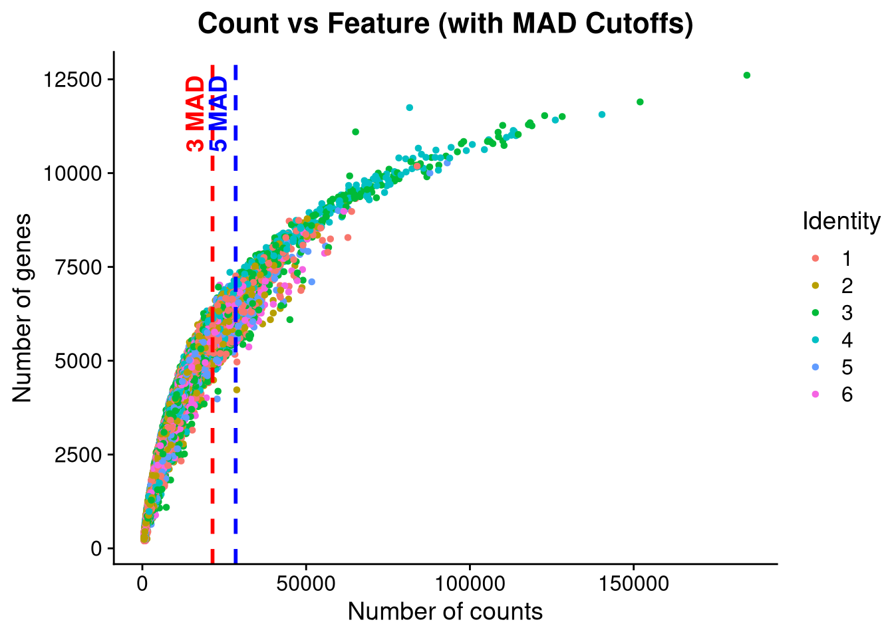
# Save the plot
ggsave(
filename = file.path(graphs_dir, "QC_count_vs_feat_lines.pdf"),
plot = qc_scatter,
width = 7, height = 5, dpi = 300, units = "in"
)Filter out low features (<500), High mitochondrial percent, and MAD5 outliers
ncol(seu_h)[1] 88582seu_h_f <- subset(seu_h, subset = nFeature_RNA > 500 & percent.mt < 15 & mad5_outlier != "Outlier")
ncol(seu_h_f)[1] 86504qs_save(seu_h_f, file.path(objects_dir, "seu_h_initial_subset.qs2"))Can be used for identifying if strictly need to integrate.
options(future.globals.maxSize = 65 * 1024^3)
seu_h_f <- SCTransform(seu_h_f, vst.flavor="v2", verbose=FALSE)
seu_h_f <- RunPCA(seu_h_f)PC_ 1
Positive: P2RY12, XACT, PLXDC2, OLR1, SPP1, IFNGR1, CX3CR1, FRMD4A, DOCK4, APBB1IP
CD69, HTRA1, IPCEF1, C3, APOC2, FCGR3A, LINC02712, ENSG00000249738, P2RY13, RGS1
SAMSN1, ADAM28, CCDC200, OLFML3, SRGN, SORL1, DLEU1, FYB1, SIPA1L2, ST6GAL1
Negative: RNASE1, SELENOP, CD36, LYVE1, F13A1, DAB2, COLEC12, CD163, SCN9A, PID1
MRC1, CD163L1, IGFBP4, TGFBI, LILRB5, IQGAP2, ITSN1, CCL8, VAV3, CD200R1
CD28, FGF13, WWP1, RND3, ANTXR2, NRP1, MS4A4A, CCDC170, CCL2, RBPJ
PC_ 2
Positive: SPP1, HLA-DRA, CD9, APOC1, FTL, FTH1, EEF1A1, CD74, TPT1, HLA-DPA1
HLA-DRB1, RPL34, HLA-DPB1, NAP1L1, TMSB4X, RPS8, LGALS3, RPL13, RPL10, APOE
CCL4L2, PLA2G7, RPS24, RPS14, RPL5, RPL41, RPL13A, CCL3, CCL4, GPNMB
Negative: MKI67, TOP2A, CENPF, ASPM, TPX2, HMMR, KNL1, NUSAP1, ANLN, CDK1
PRC1, UBE2C, H1-5, DLGAP5, NDC80, DIAPH3, GTSE1, NCAPG, KIF14, CENPE
RRM2, CKAP2L, HMGB2, CCNA2, CDCA2, H2AC14, CEP55, SYNE2, KIF23, TYMS
PC_ 3
Positive: FRMD4A, SFMBT2, DOCK4, ITPR2, AFF3, SLC9A9, ENSG00000249738, MEF2A, P2RY12, AOAH
SMYD3, LRMDA, KCNQ3, FCHSD2, PLXDC2, LINC02712, FOXN3, QKI, DIAPH2, SSBP2
LYVE1, ELMO1, SLC8A1, PRKCA, MAML2, ST6GAL1, SRGAP2, ZSWIM6, ENSG00000231918, MERTK
Negative: SPP1, HLA-DRA, CD9, APOC1, HLA-DPA1, FTL, HLA-DRB1, FTH1, TMSB4X, CD74
NAP1L1, HLA-DPB1, LGALS1, EEF1A1, TPT1, RPS8, LGALS3, DBI, CCL4, RPLP1
RPL13, RPS2, APOE, CCL3, PLA2G7, RPL41, RPL10, RPS6, GPNMB, RPS24
PC_ 4
Positive: MT-CO1, MT-CO3, MT-ND4, MT-CO2, TMSB4X, MT-CYB, MT-ATP6, TPT1, MT-ND3, RPLP1
RPS8, RPL13, MT-ND5, RPS24, EEF1A1, MT-ND4L, RPL13A, MT-ND2, FTL, ENSG00000289901
RPS2, RPS4X, RPS23, RPL34, RPS14, AIF1, MT-ND1, RPL21, P2RY12, RPS6
Negative: CCL4, CCL4L2, CCL3, CCL3L3, FOS, IL1B, DUSP1, GADD45B, CCDC200, SPP1
CCL2, TEX14, IER2, NR4A2, CD83, KLF2, CD69, BTG2, SRGN, JUNB
JUN, CXCL8, IER3, ENSG00000262202, CD36, NR4A1, OLR1, ZFP36, EGR1, ATF3
PC_ 5
Positive: CCDC200, CCL4L2, TEX14, ENSG00000262202, TPT1, AGR2, ENSG00000285646, NR4A1, PTH2R, LYVE1
CCL3L3, CST3, EEF1A1, PNRC1, RPL13, ENSG00000287979, IER3, FOSB, NR4A2, RPL13A
LINC00910, RPS8, RPS24, IER2, AIF1, IL1B, BTG2, RPLP1, H3-3B, RPL41
Negative: SPP1, CD9, IFIT3, APOC1, MX1, IFIT1, IFI44L, IFI6, IFIT2, GPNMB
LGALS3, LGALS1, IFI27, XACT, APOE, IFITM1, MX2, RTTN, GLDN, RSAD2
SCIN, MYO1E, PLA2G7, RGCC, ISG15, LINC01235, MSR1, LIPA, PLXDC2, IFITM3 seu_h_f <- RunUMAP(seu_h_f, dims=1:30)Warning: The default method for RunUMAP has changed from calling Python UMAP via reticulate to the R-native UWOT using the cosine metric
To use Python UMAP via reticulate, set umap.method to 'umap-learn' and metric to 'correlation'
This message will be shown once per session17:43:54 UMAP embedding parameters a = 0.9922 b = 1.11217:43:54 Read 86504 rows and found 30 numeric columns17:43:54 Using Annoy for neighbor search, n_neighbors = 3017:43:54 Building Annoy index with metric = cosine, n_trees = 500% 10 20 30 40 50 60 70 80 90 100%[----|----|----|----|----|----|----|----|----|----|**************************************************|
17:44:00 Writing NN index file to temp file /tmp/slurm_45194143/Rtmp4vcjwF/fileff3eb35c86ab7
17:44:00 Searching Annoy index using 1 thread, search_k = 3000
17:44:29 Annoy recall = 100%
17:44:30 Commencing smooth kNN distance calibration using 1 thread with target n_neighbors = 30
17:44:34 Initializing from normalized Laplacian + noise (using RSpectra)
17:44:37 Commencing optimization for 200 epochs, with 3929318 positive edges
17:44:37 Using rng type: pcg
17:45:16 Optimization finishedp <- DimPlot(seu_h_f,
reduction = "umap",
split.by = "pool_id",
group.by = "pool_id") +
ggtitle("Unintegrated Data: Split by Pool")
p
ggsave(file.path(graphs_dir, "QC_umaps_pools_split.pdf"), plot = p, width = 18, height = 6, units = "in")Before integrating, processed each batch individually to check for quality and assign cell type scores (e.g. Mancuso).
batches <- SplitObject(seu_h_f, split.by = "pool_id")
options(future.globals.maxSize= 8912896000000)
batches <- lapply(batches, SCTransform)Running SCTransform on assay: RNAvst.flavor='v2' set. Using model with fixed slope and excluding poisson genes.Calculating cell attributes from input UMI matrix: log_umiVariance stabilizing transformation of count matrix of size 24322 by 18350Model formula is y ~ log_umiGet Negative Binomial regression parameters per geneUsing 2000 genes, 5000 cellsFound 196 outliers - those will be ignored in fitting/regularization stepSecond step: Get residuals using fitted parameters for 24322 genesComputing corrected count matrix for 24322 genesCalculating gene attributesWall clock passed: Time difference of 1.105532 minsDetermine variable featuresCentering data matrixPlace corrected count matrix in counts slotWarning: Different cells and/or features from existing assay SCTSet default assay to SCTRunning SCTransform on assay: RNAvst.flavor='v2' set. Using model with fixed slope and excluding poisson genes.Calculating cell attributes from input UMI matrix: log_umiVariance stabilizing transformation of count matrix of size 24054 by 18346Model formula is y ~ log_umiGet Negative Binomial regression parameters per geneUsing 2000 genes, 5000 cellsFound 225 outliers - those will be ignored in fitting/regularization stepSecond step: Get residuals using fitted parameters for 24054 genesComputing corrected count matrix for 24054 genesCalculating gene attributesWall clock passed: Time difference of 1.086584 minsDetermine variable featuresCentering data matrixPlace corrected count matrix in counts slotWarning: Different cells and/or features from existing assay SCTSet default assay to SCTRunning SCTransform on assay: RNAvst.flavor='v2' set. Using model with fixed slope and excluding poisson genes.Calculating cell attributes from input UMI matrix: log_umiVariance stabilizing transformation of count matrix of size 23159 by 16345Model formula is y ~ log_umiGet Negative Binomial regression parameters per geneUsing 2000 genes, 5000 cellsFound 199 outliers - those will be ignored in fitting/regularization stepSecond step: Get residuals using fitted parameters for 23159 genesComputing corrected count matrix for 23159 genesCalculating gene attributesWall clock passed: Time difference of 57.31064 secsDetermine variable featuresCentering data matrixPlace corrected count matrix in counts slotWarning: Different cells and/or features from existing assay SCTSet default assay to SCTRunning SCTransform on assay: RNAvst.flavor='v2' set. Using model with fixed slope and excluding poisson genes.Calculating cell attributes from input UMI matrix: log_umiVariance stabilizing transformation of count matrix of size 22383 by 10620Model formula is y ~ log_umiGet Negative Binomial regression parameters per geneUsing 2000 genes, 5000 cellsFound 158 outliers - those will be ignored in fitting/regularization stepSecond step: Get residuals using fitted parameters for 22383 genesComputing corrected count matrix for 22383 genesCalculating gene attributesWall clock passed: Time difference of 40.30059 secsDetermine variable featuresCentering data matrixPlace corrected count matrix in counts slotWarning: Different cells and/or features from existing assay SCTSet default assay to SCTRunning SCTransform on assay: RNAvst.flavor='v2' set. Using model with fixed slope and excluding poisson genes.Calculating cell attributes from input UMI matrix: log_umiVariance stabilizing transformation of count matrix of size 22633 by 10588Model formula is y ~ log_umiGet Negative Binomial regression parameters per geneUsing 2000 genes, 5000 cellsFound 154 outliers - those will be ignored in fitting/regularization stepSecond step: Get residuals using fitted parameters for 22633 genesComputing corrected count matrix for 22633 genesCalculating gene attributesWall clock passed: Time difference of 40.85433 secsDetermine variable featuresCentering data matrixPlace corrected count matrix in counts slotWarning: Different cells and/or features from existing assay SCTSet default assay to SCTRunning SCTransform on assay: RNAvst.flavor='v2' set. Using model with fixed slope and excluding poisson genes.Calculating cell attributes from input UMI matrix: log_umiVariance stabilizing transformation of count matrix of size 23243 by 12255Model formula is y ~ log_umiGet Negative Binomial regression parameters per geneUsing 2000 genes, 5000 cellsFound 175 outliers - those will be ignored in fitting/regularization stepSecond step: Get residuals using fitted parameters for 23243 genesComputing corrected count matrix for 23243 genesCalculating gene attributesWall clock passed: Time difference of 45.86747 secsDetermine variable featuresCentering data matrixPlace corrected count matrix in counts slotWarning: Different cells and/or features from existing assay SCTSet default assay to SCTbatches <- lapply(batches, \(o) {
set.seed(42)
o <- RunPCA(
o,
npcs = 30,
assay = "SCT",
verbose = FALSE
)
set.seed(42)
o <- RunUMAP(
o,
dims = 1:25,
n.neighbors = 30L,
n.epochs = 500,
min.dist = 0.05
)
o
})Warning: Number of dimensions changing from 50 to 3017:51:26 UMAP embedding parameters a = 1.75 b = 0.842117:51:26 Read 18350 rows and found 25 numeric columns17:51:26 Using Annoy for neighbor search, n_neighbors = 3017:51:26 Building Annoy index with metric = cosine, n_trees = 500% 10 20 30 40 50 60 70 80 90 100%[----|----|----|----|----|----|----|----|----|----|**************************************************|
17:51:27 Writing NN index file to temp file /tmp/slurm_45194143/Rtmp4vcjwF/fileff3eb594328e4
17:51:27 Searching Annoy index using 1 thread, search_k = 3000
17:51:32 Annoy recall = 100%
17:51:33 Commencing smooth kNN distance calibration using 1 thread with target n_neighbors = 30
17:51:35 Initializing from normalized Laplacian + noise (using RSpectra)
17:51:36 Commencing optimization for 500 epochs, with 798570 positive edges
17:51:36 Using rng type: pcg
17:51:56 Optimization finishedWarning: Number of dimensions changing from 50 to 3017:51:59 UMAP embedding parameters a = 1.75 b = 0.8421
17:51:59 Read 18346 rows and found 25 numeric columns
17:51:59 Using Annoy for neighbor search, n_neighbors = 30
17:51:59 Building Annoy index with metric = cosine, n_trees = 50
0% 10 20 30 40 50 60 70 80 90 100%
[----|----|----|----|----|----|----|----|----|----|
**************************************************|
17:52:00 Writing NN index file to temp file /tmp/slurm_45194143/Rtmp4vcjwF/fileff3eb38490db5
17:52:00 Searching Annoy index using 1 thread, search_k = 3000
17:52:05 Annoy recall = 100%
17:52:06 Commencing smooth kNN distance calibration using 1 thread with target n_neighbors = 30
17:52:08 Initializing from normalized Laplacian + noise (using RSpectra)
17:52:08 Commencing optimization for 500 epochs, with 815792 positive edges
17:52:08 Using rng type: pcg
17:52:29 Optimization finishedWarning: Number of dimensions changing from 50 to 3017:52:32 UMAP embedding parameters a = 1.75 b = 0.8421
17:52:32 Read 16345 rows and found 25 numeric columns
17:52:32 Using Annoy for neighbor search, n_neighbors = 30
17:52:32 Building Annoy index with metric = cosine, n_trees = 50
0% 10 20 30 40 50 60 70 80 90 100%
[----|----|----|----|----|----|----|----|----|----|
**************************************************|
17:52:33 Writing NN index file to temp file /tmp/slurm_45194143/Rtmp4vcjwF/fileff3eb135e759b
17:52:33 Searching Annoy index using 1 thread, search_k = 3000
17:52:37 Annoy recall = 100%
17:52:38 Commencing smooth kNN distance calibration using 1 thread with target n_neighbors = 30
17:52:40 Initializing from normalized Laplacian + noise (using RSpectra)
17:52:40 Commencing optimization for 500 epochs, with 718316 positive edges
17:52:40 Using rng type: pcg
17:52:59 Optimization finishedWarning: Number of dimensions changing from 50 to 3017:53:01 UMAP embedding parameters a = 1.75 b = 0.8421
17:53:01 Read 10620 rows and found 25 numeric columns
17:53:01 Using Annoy for neighbor search, n_neighbors = 30
17:53:01 Building Annoy index with metric = cosine, n_trees = 50
0% 10 20 30 40 50 60 70 80 90 100%
[----|----|----|----|----|----|----|----|----|----|
**************************************************|
17:53:01 Writing NN index file to temp file /tmp/slurm_45194143/Rtmp4vcjwF/fileff3eb73374c67
17:53:01 Searching Annoy index using 1 thread, search_k = 3000
17:53:04 Annoy recall = 100%
17:53:05 Commencing smooth kNN distance calibration using 1 thread with target n_neighbors = 30
17:53:07 Initializing from normalized Laplacian + noise (using RSpectra)
17:53:07 Commencing optimization for 500 epochs, with 460334 positive edges
17:53:07 Using rng type: pcg
17:53:19 Optimization finishedWarning: Number of dimensions changing from 50 to 3017:53:21 UMAP embedding parameters a = 1.75 b = 0.8421
17:53:21 Read 10588 rows and found 25 numeric columns
17:53:21 Using Annoy for neighbor search, n_neighbors = 30
17:53:21 Building Annoy index with metric = cosine, n_trees = 50
0% 10 20 30 40 50 60 70 80 90 100%
[----|----|----|----|----|----|----|----|----|----|
**************************************************|
17:53:22 Writing NN index file to temp file /tmp/slurm_45194143/Rtmp4vcjwF/fileff3eb388b683c
17:53:22 Searching Annoy index using 1 thread, search_k = 3000
17:53:24 Annoy recall = 100%
17:53:25 Commencing smooth kNN distance calibration using 1 thread with target n_neighbors = 30
17:53:27 Initializing from normalized Laplacian + noise (using RSpectra)
17:53:27 Commencing optimization for 500 epochs, with 460154 positive edges
17:53:27 Using rng type: pcg
17:53:39 Optimization finishedWarning: Number of dimensions changing from 50 to 3017:53:41 UMAP embedding parameters a = 1.75 b = 0.8421
17:53:41 Read 12255 rows and found 25 numeric columns
17:53:41 Using Annoy for neighbor search, n_neighbors = 30
17:53:41 Building Annoy index with metric = cosine, n_trees = 50
0% 10 20 30 40 50 60 70 80 90 100%
[----|----|----|----|----|----|----|----|----|----|
**************************************************|
17:53:42 Writing NN index file to temp file /tmp/slurm_45194143/Rtmp4vcjwF/fileff3eb3f90b9c
17:53:42 Searching Annoy index using 1 thread, search_k = 3000
17:53:45 Annoy recall = 100%
17:53:46 Commencing smooth kNN distance calibration using 1 thread with target n_neighbors = 30
17:53:48 Initializing from normalized Laplacian + noise (using RSpectra)
17:53:48 Commencing optimization for 500 epochs, with 529934 positive edges
17:53:48 Using rng type: pcg
17:54:02 Optimization finishedinvisible(lapply(names(batches), function(nm){
p <- DimPlot(batches[[nm]], reduction = "umap", group.by = "orig.ident", shuffle=TRUE) + ggtitle(nm)
p2<- FeaturePlot(batches[[nm]], features = c("nCount_RNA", "nFeature_RNA", "percent.mt"), cols = c("#440154", "#FDE725"))
p3 <- DimPlot(batches[[nm]], group.by = "scDblFinder.class") +
ggtitle(glue("Doublet Locations Batch{nm}"))
p4 <- DimPlot(batches[[nm]], reduction = "umap", split.by = "orig.ident", shuffle=TRUE, ncol = 3) + ggtitle(nm)
print(p)
print(p2)
print(p3)
print(p4)
#create batch subdirectories for each batch
batch_graphs_dir <- file.path(graphs_dir, glue("batch_{nm}"))
dir.create(batch_graphs_dir, recursive = TRUE, showWarnings = FALSE)
ggsave(
filename = file.path(batch_graphs_dir,glue("QC_batch{nm}_umap_samples_overlayed.pdf")),
plot = p,
width = 7, height = 5, dpi = 300, units = "in"
)
ggsave(
filename = file.path(batch_graphs_dir,glue("QC_batch{nm}_umap_qc_x3.pdf")),
plot = p2,
width = 7, height = 5, dpi = 300, units = "in"
)
ggsave(
filename = file.path(batch_graphs_dir,glue("QC_batch{nm}_doublets_umap.pdf")),
plot = p3,
width = 7, height = 5, dpi = 300, units = "in"
)
ggsave(
filename = file.path(batch_graphs_dir,glue("QC_batch{nm}_umap_samples_split.pdf")),
plot = p4,
width = 7, height = 5, dpi = 300, units = "in"
)
}))


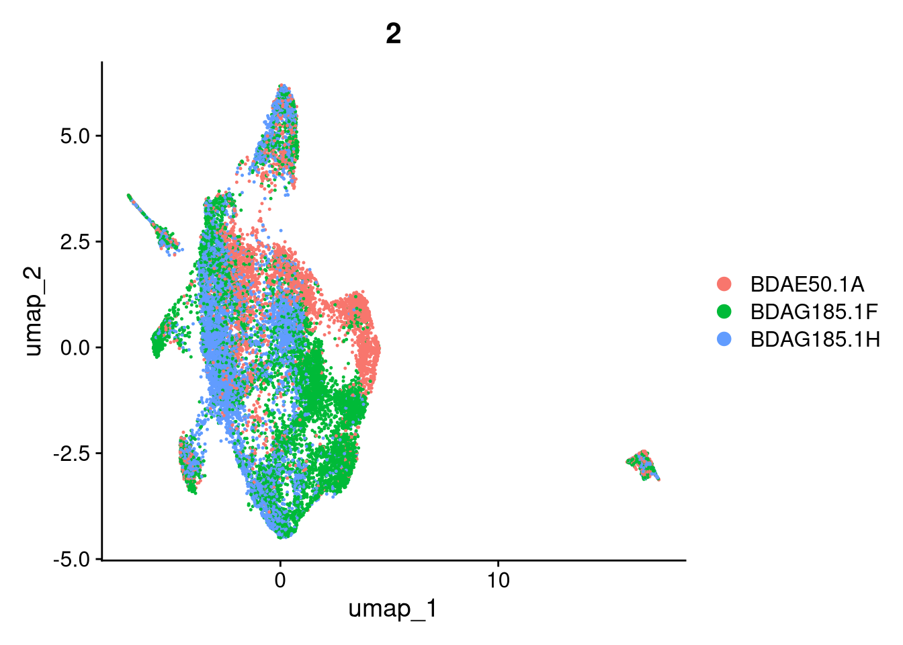

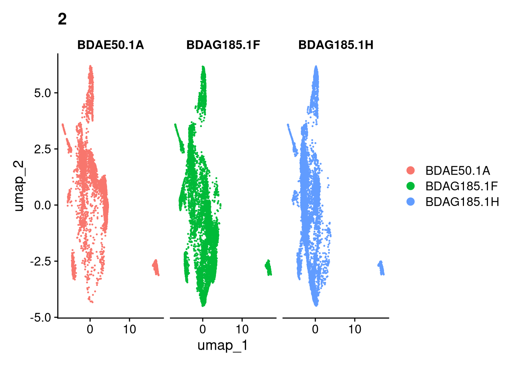

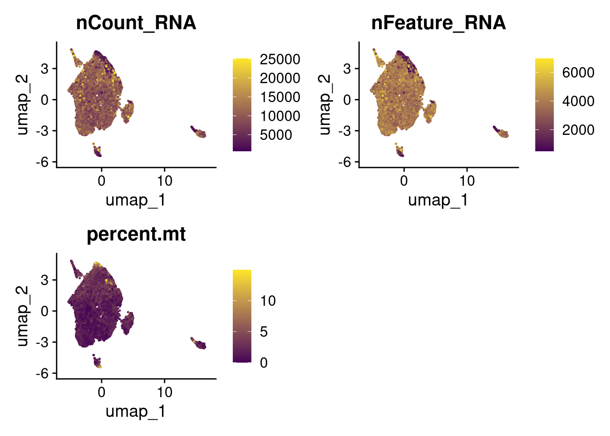
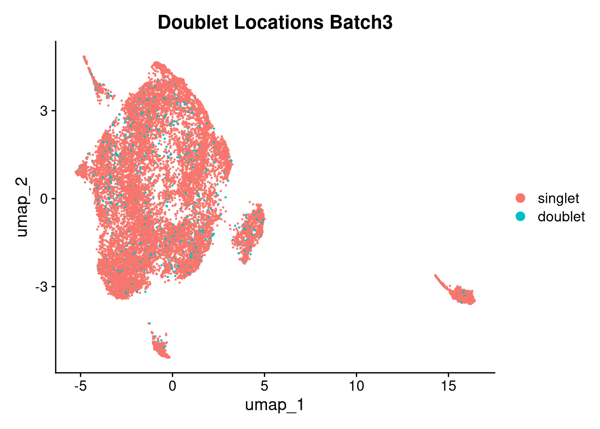


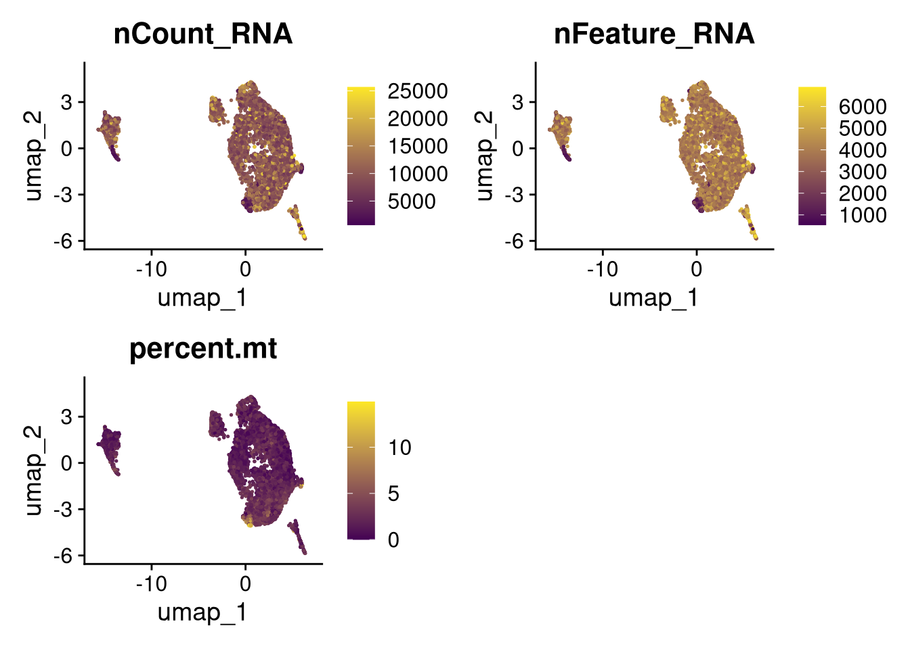
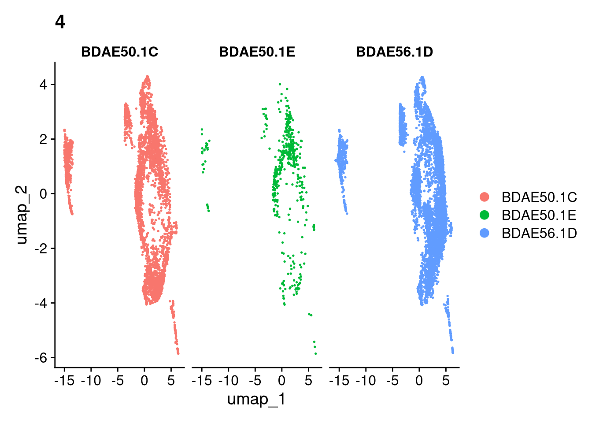
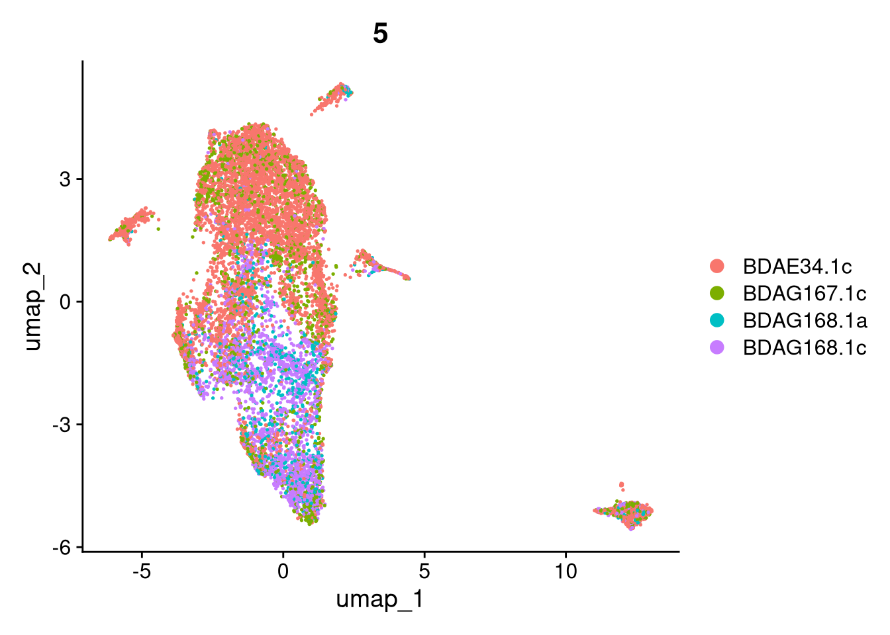
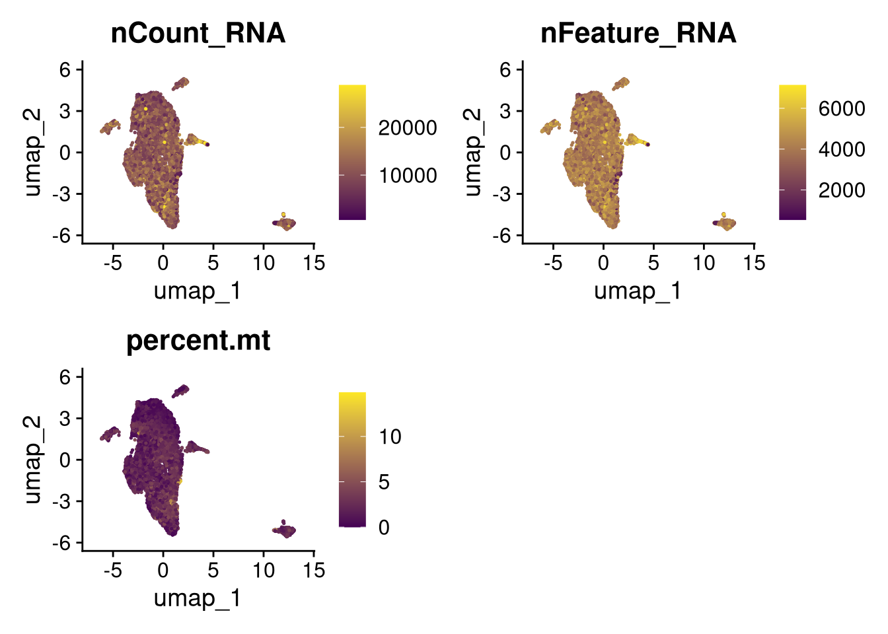


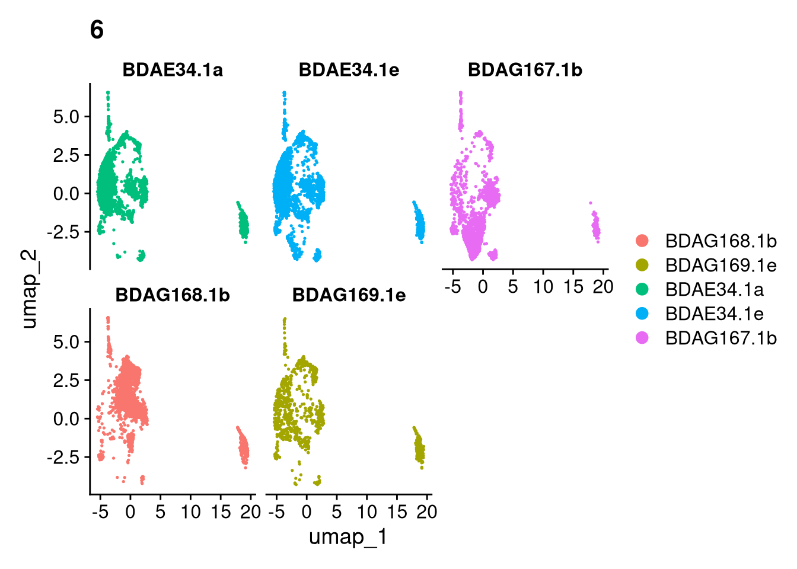
qs_save(batches, file = file.path(objects_dir, "umap_batches.qs2"))batches <- qs_read(file.path(objects_dir, "umap_batches.qs2"))res = 0.2
batches <- lapply(batches, \(o) {
set.seed(42)
o <- FindNeighbors(o, reduction = "pca", dims = 1:30)
set.seed(42)
o <- FindClusters(o, resolution = res)
})Computing nearest neighbor graphComputing SNNModularity Optimizer version 1.3.0 by Ludo Waltman and Nees Jan van Eck
Number of nodes: 18350
Number of edges: 608878
Running Louvain algorithm...
Maximum modularity in 10 random starts: 0.9067
Number of communities: 8
Elapsed time: 3 secondsComputing nearest neighbor graph
Computing SNNModularity Optimizer version 1.3.0 by Ludo Waltman and Nees Jan van Eck
Number of nodes: 18346
Number of edges: 614514
Running Louvain algorithm...
Maximum modularity in 10 random starts: 0.8986
Number of communities: 9
Elapsed time: 2 secondsComputing nearest neighbor graph
Computing SNNModularity Optimizer version 1.3.0 by Ludo Waltman and Nees Jan van Eck
Number of nodes: 16345
Number of edges: 521575
Running Louvain algorithm...
Maximum modularity in 10 random starts: 0.8821
Number of communities: 8
Elapsed time: 2 secondsComputing nearest neighbor graph
Computing SNNModularity Optimizer version 1.3.0 by Ludo Waltman and Nees Jan van Eck
Number of nodes: 10620
Number of edges: 360281
Running Louvain algorithm...
Maximum modularity in 10 random starts: 0.8946
Number of communities: 8
Elapsed time: 1 secondsComputing nearest neighbor graph
Computing SNNModularity Optimizer version 1.3.0 by Ludo Waltman and Nees Jan van Eck
Number of nodes: 10588
Number of edges: 344063
Running Louvain algorithm...
Maximum modularity in 10 random starts: 0.8836
Number of communities: 7
Elapsed time: 1 secondsComputing nearest neighbor graph
Computing SNNModularity Optimizer version 1.3.0 by Ludo Waltman and Nees Jan van Eck
Number of nodes: 12255
Number of edges: 406332
Running Louvain algorithm...
Maximum modularity in 10 random starts: 0.8973
Number of communities: 8
Elapsed time: 1 secondsinvisible(lapply(names(batches), function(nm){
p <- DimPlot(batches[[nm]], reduction = "umap", label = TRUE) + ggtitle(glue("Batch {nm} UMAP {res} resolution"))
print(p)
batch_graphs_dir <- file.path(graphs_dir, glue("batch_{nm}"))
ggsave(
filename = file.path(batch_graphs_dir, glue("clusters_batch_{nm}_{res}.pdf")),
plot = p,
width = 7, height = 5, dpi = 300, units = "in")
}))

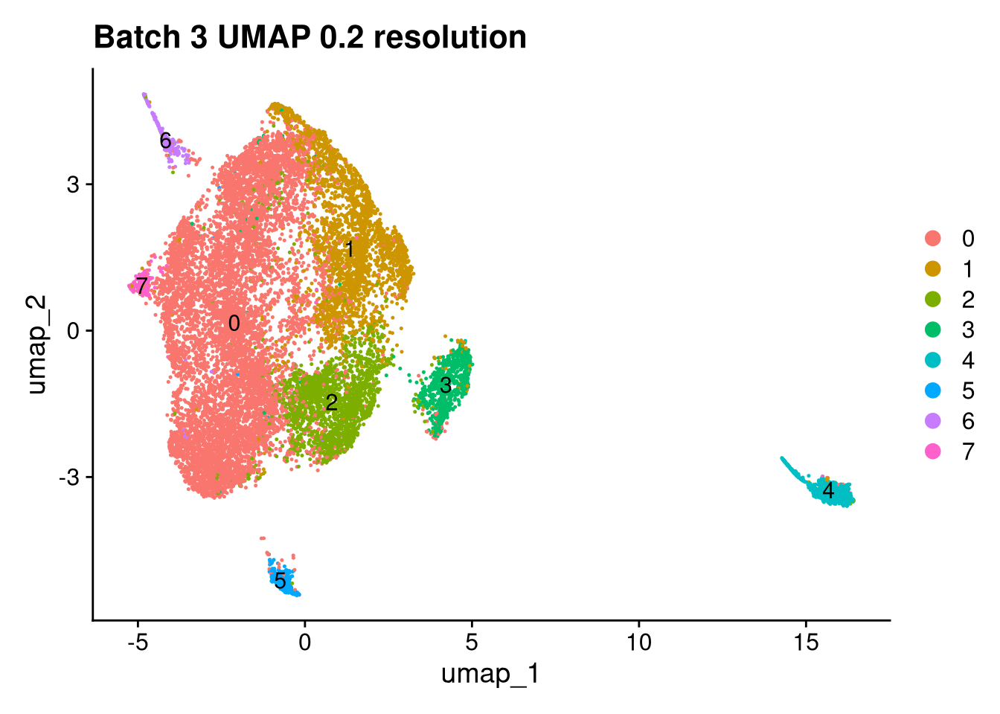
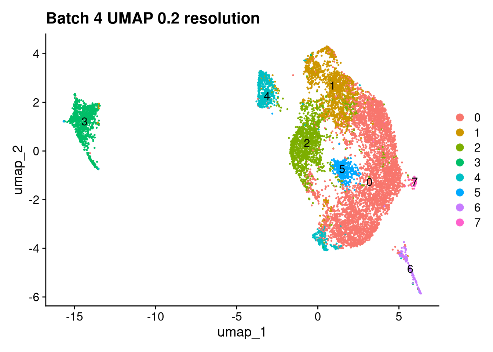
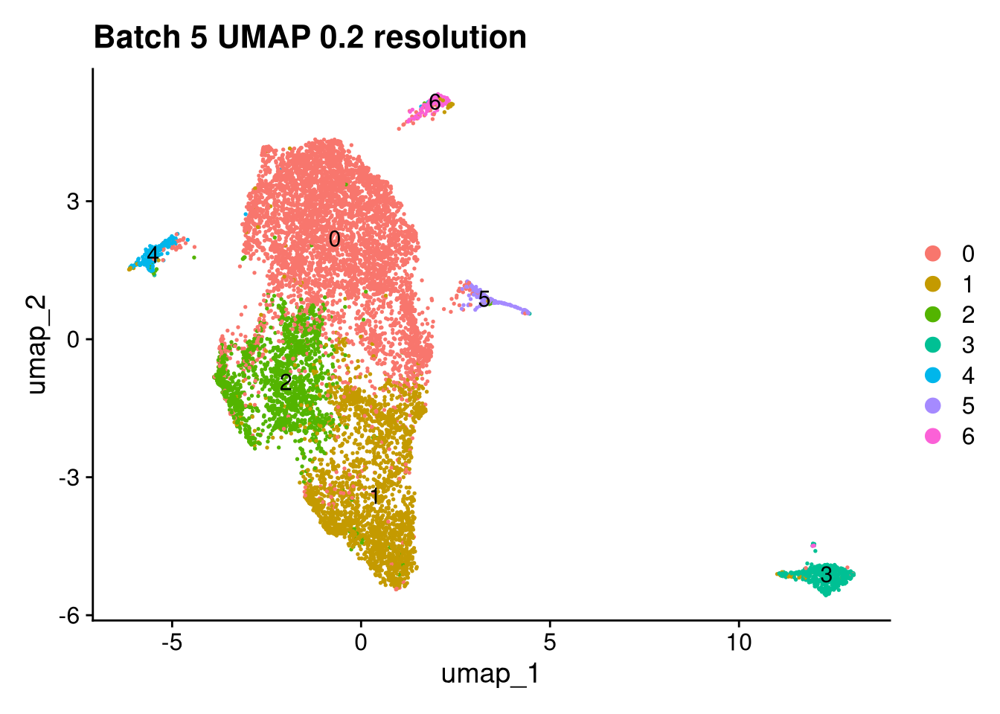

for (i in seq_along(batches)) {
qs_save(batches[[i]], file = paste0(objects_dir, "/", "batch", i, "_clustered.qs2"))
}files <- list.files(
path = objects_dir,
pattern = "batch[0-9]+_clustered.qs2", # Matches your specific naming pattern
full.names = TRUE
)
batches <- lapply(files, qs_read)Using signature txt files supplied by Emma
#emma text files
sig_dir <- file.path(base_dir,"signatures")
gs_myeloid <- readLines(file.path(sig_dir, "myeloid.txt"))
myeloid_seu <- intersect(gs_myeloid, rownames(batches[[1]]))
myeloid_seu[1] "CCL2" "IL1B" "CCL3" "CD14" "LYZ" "MNDA" "ITGB2"
[8] "HLA-DRA" "FCGR1A" gs_proliferating <- readLines(file.path(sig_dir, "proliferating.txt"))
prolif_seu <- intersect(gs_proliferating, rownames(batches[[1]]))
gs_proliferating [1] "CDC45" "CDCA7" "MCM10" "MCM2" "STMN1" "TUBB"
[7] "LGALS1" "H2AF2" "HIST1H4C" "ASPM" gs_macrophage <- readLines(file.path(sig_dir, "macrophage.txt"))
macrophage_seu <- intersect(gs_macrophage, rownames(batches[[1]]))
macrophage_seu[1] "SIGLEC1" "LYVE1" "CD38" gs_dendritic <- readLines(file.path(sig_dir, "dendritic.txt"))
dendritic_seu <- intersect(gs_dendritic, rownames(batches[[1]]))
dendritic_seu[1] "CLEC9A" "FCER1A" "CD44" "MYB" "PTPN12" "PTPN13" "AGR2" #mancuso modules
mancuso <- "/nemo/lab/destrooperb/home/shared/zanettc/Mancuso2024_genesets"
gs_crm <- readLines(file.path(mancuso, "CRM_geneset.txt"))
gs_dam <- readLines(file.path(mancuso, "DAM_geneset.txt"))
gs_hla <- readLines(file.path(mancuso, "HLA_geneset.txt"))
gs_hm <- readLines(file.path(mancuso, "HM_geneset.txt"))
gs_irm <- readLines(file.path(mancuso, "IRM_geneset.txt"))
gs_rm <- readLines(file.path(mancuso, "RM_geneset.txt"))Warning in readLines(file.path(mancuso, "RM_geneset.txt")): incomplete final
line found on
'/nemo/lab/destrooperb/home/shared/zanettc/Mancuso2024_genesets/RM_geneset.txt'gs_tcrm <- readLines(file.path(mancuso, "transCRM_geneset.txt"))gene_sets <- list(
dendritic = dendritic_seu,
proliferating = prolif_seu,
macrophage = macrophage_seu,
myeloid = myeloid_seu,
CRM = gs_crm,
DAM = gs_dam,
HLA = gs_hla,
HM = gs_hm,
IRM = gs_irm,
RM = gs_rm,
tCRM = gs_tcrm
)
# process each batch using an index 'i'
# seq_along() so 'i' becomes 1, 2, 3... corresponding to the list order
batches <- lapply(seq_along(batches), function(i) {
# Extract the object using the index
o <- batches[[i]]
# Define a clean name for this batch
nm <- as.character(i)
message(glue("Processing Batch {nm}..."))
# Setup Directory
batch_graphs_dir <- file.path(graphs_dir, glue("batch_{nm}"))
if (!dir.exists(batch_graphs_dir)) dir.create(batch_graphs_dir, recursive = TRUE)
# 2. Add Module Scores
# AddModuleScore calculates the average expression of the gene set
# subtracted by aggregated expression of control feature sets.
o <- AddModuleScore(
object = o,
features = gene_sets,
name = names(gene_sets),
ctrl = 5,
seed = 42
)
# 3. Factorize Clusters for numerical ordering
o$seurat_clusters <- factor(
o$seurat_clusters,
levels = sort(as.numeric(unique(as.character(o$seurat_clusters))))
)
Idents(o) <- "seurat_clusters"
# 4. Generate Plots
# Plot 1: Cell Types
p1 <- VlnPlot(
o,
features = c("dendritic1", "proliferating2", "macrophage3", "myeloid4"),
group.by = "seurat_clusters",
pt.size = 0,
ncol = 2
) + ggtitle(glue("Batch {nm}: Cell Types"))
# Plot 2: Mancuso Signatures
p2 <- VlnPlot(
o,
features = c("CRM5", "DAM6", "HLA7", "HM8", "IRM9", "RM10", "tCRM11"),
group.by = "seurat_clusters",
pt.size = 0,
ncol = 4
) + ggtitle(glue("Batch {nm}: Mancuso Scores"))
# Plot 3: QC
p3 <- VlnPlot(
o,
features = c("nFeature_RNA"),
group.by = "seurat_clusters",
pt.size = 0,
ncol = 2
) + ggtitle(glue("Batch {nm}: QC"))
# 5. Save Plots
ggsave(
filename = file.path(batch_graphs_dir, glue("batch_{nm}_celltypes.pdf")),
plot = p1, width = 7, height = 5, dpi = 300
)
ggsave(
filename = file.path(batch_graphs_dir, glue("batch_{nm}_mancuso.pdf")),
plot = p2, width = 10, height = 5, dpi = 300
)
ggsave(
filename = file.path(batch_graphs_dir, glue("batch_{nm}_qc.pdf")),
plot = p3, width = 10, height = 5, dpi = 300
)
# Return the modified object to update the list
return(o)
})Processing Batch 1...Warning: The following features are not present in the object: CCL3L1, IL8,
MIR142, CCL4L1, LINC00936, H3F3B, RN7SL1, SNORD3B-2, AC006129.4, RP11-386I14.4,
MIR24-2, not searching for symbol synonymsWarning: The following features are not present in the object: MT-RNR2,
RP11-536O18.2, FAM129A, AC004086.1, MT-RNR1, C9orf16, TMEM251, ATP5E, PPAP2A,
not searching for symbol synonymsWarning: The following features are not present in the object: GNB2L1, GLTSCR2,
ATP5G2, RPS4Y1, not searching for symbol synonymsWarning: The following features are not present in the object: C1orf63,
FAM105A, GPR56, C10orf54, TMEM173, FYB, RP11-480C22.1, RP11-343N15.5, KIAA1551,
RP1-249H1.4, RP11-439A17.7, not searching for symbol synonymsWarning: The following features are not present in the object: DDX58, FAM26F,
C19orf66, WARS, not searching for symbol synonymsWarning: The following features are not present in the object: GNB2L1, not
searching for symbol synonymsWarning: The following features are not present in the object: LINC00936,
H3F3B, SNORD3B-1, CTA-29F11-1, SNORD3B-2, MT-RNR2, AC253572-2, AC103591-3,
AC020916-1, RP11-386I14-4, MT-RNR1, HIST2H2AA3, MTCO1P12, AP003481-1,
AC004687-1, SNORD3A, AC243960-1, HIST1H4E, RP1-18D14-7, AC245014-3, AL499604-1,
AL118516-1, AL021155-2, HIST1H4C, GGTA1P, RNU2-63P, not searching for symbol
synonymsProcessing Batch 2...Warning: The following features are not present in the object: CCL3L1, IL8,
MIR142, CCL4L1, LINC00936, H3F3B, RN7SL1, SNORD3B-2, AC006129.4, RP11-386I14.4,
MIR24-2, not searching for symbol synonymsWarning: The following features are not present in the object: MT-RNR2,
RP11-536O18.2, FAM129A, AC004086.1, MT-RNR1, C9orf16, TMEM251, ATP5E, PPAP2A,
not searching for symbol synonymsWarning: The following features are not present in the object: GNB2L1, GLTSCR2,
ATP5G2, RPS4Y1, not searching for symbol synonymsWarning: The following features are not present in the object: C1orf63,
FAM105A, GPR56, C10orf54, TMEM173, FYB, RP11-480C22.1, RP11-343N15.5, KIAA1551,
RP1-249H1.4, RP11-439A17.7, not searching for symbol synonymsWarning: The following features are not present in the object: DDX58, FAM26F,
C19orf66, WARS, not searching for symbol synonymsWarning: The following features are not present in the object: GNB2L1, not
searching for symbol synonymsWarning: The following features are not present in the object: LINC00936,
H3F3B, SNORD3B-1, CTA-29F11-1, SNORD3B-2, MT-RNR2, AC253572-2, AC103591-3,
AC020916-1, RP11-386I14-4, MT-RNR1, HIST2H2AA3, MTCO1P12, AP003481-1,
AC004687-1, SNORD3A, AC243960-1, HIST1H4E, RP1-18D14-7, AC245014-3, AL499604-1,
AL118516-1, AL021155-2, HIST1H4C, GGTA1P, RNU2-63P, not searching for symbol
synonymsProcessing Batch 3...Warning: The following features are not present in the object: CCL3L1, IL8,
MIR142, CCL4L1, LINC00936, H3F3B, RN7SL1, SNORD3B-2, AC006129.4, RP11-386I14.4,
MIR24-2, not searching for symbol synonymsWarning: The following features are not present in the object: MT-RNR2,
RP11-536O18.2, FAM129A, AC004086.1, MT-RNR1, C9orf16, TMEM251, ATP5E, PPAP2A,
not searching for symbol synonymsWarning: The following features are not present in the object: GNB2L1, GLTSCR2,
ATP5G2, RPS4Y1, not searching for symbol synonymsWarning: The following features are not present in the object: C1orf63,
FAM105A, GPR56, C10orf54, TMEM173, FYB, RP11-480C22.1, RP11-343N15.5, KIAA1551,
RP1-249H1.4, RP11-439A17.7, not searching for symbol synonymsWarning: The following features are not present in the object: DDX58, FAM26F,
C19orf66, WARS, not searching for symbol synonymsWarning: The following features are not present in the object: GNB2L1, not
searching for symbol synonymsWarning: The following features are not present in the object: LINC00936,
H3F3B, SNORD3B-1, CTA-29F11-1, SNORD3B-2, MT-RNR2, AC253572-2, AC103591-3,
AC020916-1, RP11-386I14-4, MT-RNR1, HIST2H2AA3, MTCO1P12, AP003481-1,
AC004687-1, SNORD3A, AC243960-1, HIST1H4E, RP1-18D14-7, AC245014-3, AL499604-1,
AL118516-1, AL021155-2, HIST1H4C, GGTA1P, RNU2-63P, not searching for symbol
synonymsProcessing Batch 4...Warning: The following features are not present in the object: CCL3L1, IL8,
MIR142, CCL4L1, LINC00936, H3F3B, RN7SL1, SNORD3B-2, AC006129.4, RP11-386I14.4,
MIR24-2, not searching for symbol synonymsWarning: The following features are not present in the object: MT-RNR2,
RP11-536O18.2, FAM129A, AC004086.1, MT-RNR1, C9orf16, TMEM251, ATP5E, PPAP2A,
not searching for symbol synonymsWarning: The following features are not present in the object: GNB2L1, GLTSCR2,
ATP5G2, RPS4Y1, not searching for symbol synonymsWarning: The following features are not present in the object: C1orf63,
FAM105A, GPR56, C10orf54, TMEM173, FYB, RP11-480C22.1, RP11-343N15.5, KIAA1551,
RP1-249H1.4, RP11-439A17.7, not searching for symbol synonymsWarning: The following features are not present in the object: DDX58, FAM26F,
C19orf66, WARS, TNFAIP6, not searching for symbol synonymsWarning: The following features are not present in the object: GNB2L1, not
searching for symbol synonymsWarning: The following features are not present in the object: LINC00936,
H3F3B, SNORD3B-1, CTA-29F11-1, SNORD3B-2, MT-RNR2, AC253572-2, AC103591-3,
AC020916-1, RP11-386I14-4, MT-RNR1, HIST2H2AA3, MTCO1P12, AP003481-1,
AC004687-1, SNORD3A, AC243960-1, HIST1H4E, RP1-18D14-7, AC245014-3, AL499604-1,
AL118516-1, AL021155-2, HIST1H4C, GGTA1P, RNU2-63P, not searching for symbol
synonymsProcessing Batch 5...Warning: The following features are not present in the object: CCL3L1, IL8,
MIR142, CCL4L1, LINC00936, H3F3B, RN7SL1, SNORD3B-2, AC006129.4, RP11-386I14.4,
MIR24-2, not searching for symbol synonymsWarning: The following features are not present in the object: MT-RNR2,
RP11-536O18.2, FAM129A, AC004086.1, MT-RNR1, C9orf16, TMEM251, ATP5E, PPAP2A,
not searching for symbol synonymsWarning: The following features are not present in the object: GNB2L1, GLTSCR2,
ATP5G2, RPS4Y1, not searching for symbol synonymsWarning: The following features are not present in the object: C1orf63,
FAM105A, GPR56, C10orf54, TMEM173, FYB, RP11-480C22.1, RP11-343N15.5, KIAA1551,
RP1-249H1.4, RP11-439A17.7, not searching for symbol synonymsWarning: The following features are not present in the object: DDX58, FAM26F,
C19orf66, WARS, TNFAIP6, CXCL11, not searching for symbol synonymsWarning: The following features are not present in the object: GNB2L1, not
searching for symbol synonymsWarning: The following features are not present in the object: LINC00936,
H3F3B, SNORD3B-1, CTA-29F11-1, SNORD3B-2, MT-RNR2, AC253572-2, AC103591-3,
AC020916-1, RP11-386I14-4, MT-RNR1, HIST2H2AA3, MTCO1P12, AP003481-1,
AC004687-1, SNORD3A, AC243960-1, HIST1H4E, RP1-18D14-7, AC245014-3, AL499604-1,
AL118516-1, AL021155-2, HIST1H4C, GGTA1P, RNU2-63P, not searching for symbol
synonymsProcessing Batch 6...Warning: The following features are not present in the object: CCL3L1, IL8,
MIR142, CCL4L1, LINC00936, H3F3B, RN7SL1, SNORD3B-2, AC006129.4, RP11-386I14.4,
MIR24-2, not searching for symbol synonymsWarning: The following features are not present in the object: MT-RNR2,
RP11-536O18.2, FAM129A, AC004086.1, MT-RNR1, C9orf16, TMEM251, ATP5E, PPAP2A,
not searching for symbol synonymsWarning: The following features are not present in the object: GNB2L1, GLTSCR2,
ATP5G2, RPS4Y1, not searching for symbol synonymsWarning: The following features are not present in the object: C1orf63,
FAM105A, GPR56, C10orf54, TMEM173, FYB, RP11-480C22.1, RP11-343N15.5, KIAA1551,
RP1-249H1.4, RP11-439A17.7, not searching for symbol synonymsWarning: The following features are not present in the object: DDX58, FAM26F,
C19orf66, WARS, TNFAIP6, CXCL11, not searching for symbol synonymsWarning: The following features are not present in the object: GNB2L1, not
searching for symbol synonymsWarning: The following features are not present in the object: LINC00936,
H3F3B, SNORD3B-1, CTA-29F11-1, SNORD3B-2, MT-RNR2, AC253572-2, AC103591-3,
AC020916-1, RP11-386I14-4, MT-RNR1, HIST2H2AA3, MTCO1P12, AP003481-1,
AC004687-1, SNORD3A, AC243960-1, HIST1H4E, RP1-18D14-7, AC245014-3, AL499604-1,
AL118516-1, AL021155-2, HIST1H4C, GGTA1P, RNU2-63P, not searching for symbol
synonymsMerges batches using reciprocal PCA (RPCA) to align them.
RPCA is relatively gentle, so removes technical batch effects while hopefully preserving biological variance.
#merge list of batches back into one object
merged_obj <- merge(batches[[1]], y = batches[-1])
Idents(merged_obj) <- "pool_id"#run SCTransform on merged object
options(future.globals.maxSize = 100 * 1024^3)
merged_obj <- SCTransform(merged_obj, vst.flavor = "v2", verbose = FALSE)#run PCA on unintegrated object (required for RPCA)
merged_obj <- RunPCA(merged_obj, verbose = FALSE, assay = "SCT")set.seed(42)
options(future.globals.maxSize = 100 * 1024^3)
#Change this for each diff method
int_method = "rpca"
DefaultAssay(merged_obj) <- "SCT"
merged_obj <- IntegrateLayers(
object = merged_obj,
method = RPCAIntegration, #RPCAIntegration, #HarmonyIntegration
normalization.method = "SCT",
orig.reduction = "pca",
new.reduction = glue("integrated.{int_method}"),
verbose = FALSE
)Warning: UNRELIABLE VALUE: One of the 'future.apply' iterations
('future_lapply-1') unexpectedly generated random numbers without declaring so.
There is a risk that those random numbers are not statistically sound and the
overall results might be invalid. To fix this, specify 'future.seed=TRUE'. This
ensures that proper, parallel-safe random numbers are produced via a parallel
RNG method. To disable this check, use 'future.seed = NULL', or set option
'future.rng.onMisuse' to "ignore". [future 'future_lapply-1'
(1dc26fea6f108bf94a15ed6c345536c2-59); on
1dc26fea6f108bf94a15ed6c345536c2@cn036<1045483>]Using integrated reduction
set.seed(42)
merged_obj <- FindNeighbors(
merged_obj,
reduction = glue("integrated.{int_method}"),
dims = 1:30
)Computing nearest neighbor graphComputing SNNset.seed(42)
int_method <- "rpca"
cluster_resolution = 0.2
#find clusters
merged_obj <- FindClusters(
merged_obj,
resolution = cluster_resolution,
cluster.name = glue("{int_method}_clusters"),
graph.name = "SCT_snn"
)Modularity Optimizer version 1.3.0 by Ludo Waltman and Nees Jan van Eck
Number of nodes: 86504
Number of edges: 2726533
Running Louvain algorithm...
Maximum modularity in 10 random starts: 0.9195
Number of communities: 12
Elapsed time: 37 secondsset.seed(42)
merged_obj <- RunUMAP(
merged_obj,
#reduction = glue("integrated.{int_method}"),
dims = 1:30,
reduction.name = glue("umap.{int_method}")
)18:12:55 UMAP embedding parameters a = 0.9922 b = 1.11218:12:55 Read 86504 rows and found 30 numeric columns18:12:55 Using Annoy for neighbor search, n_neighbors = 3018:12:55 Building Annoy index with metric = cosine, n_trees = 500% 10 20 30 40 50 60 70 80 90 100%[----|----|----|----|----|----|----|----|----|----|**************************************************|
18:13:00 Writing NN index file to temp file /tmp/slurm_45194143/Rtmp4vcjwF/fileff3eb3f8c62a9
18:13:00 Searching Annoy index using 1 thread, search_k = 3000
18:13:28 Annoy recall = 100%
18:13:30 Commencing smooth kNN distance calibration using 1 thread with target n_neighbors = 30
18:13:33 Initializing from normalized Laplacian + noise (using RSpectra)
18:13:37 Commencing optimization for 200 epochs, with 3937638 positive edges
18:13:37 Using rng type: pcg
18:14:16 Optimization finishedqs_save(merged_obj, file= file.path(objects_dir, "prelabelled_integrated_rpca.qs2"))
merged_obj <- qs_read(file.path(objects_dir, "prelabelled_integrated_rpca.qs2"))Initial clusters
Sample distribution
Pool distribution
QC (Number of genes, UMIs, % MT)
Doulbets and outliers
Split by condition
#PLOT INITIAL CLUSTERS#########################################
p1 <- DimPlot(
merged_obj,
reduction = glue("umap.{int_method}"),
group.by = glue("{int_method}_clusters"),
label = TRUE
) + ggtitle(glue("Clusters {cluster_resolution} resolution"))
#CHECK SAMPLE DISTRIBUTION#####################################
p2 <- DimPlot(
merged_obj,
reduction = glue("umap.{int_method}"),
group.by = "orig.ident", # Or whatever column holds your batch ID
shuffle = TRUE, # Shuffles points so one batch doesn't hide another
alpha = 0.5 # Transparency helps see overlap
) + ggtitle("Sample Distribution Overlaid")
p2.5 <- DimPlot(
merged_obj,
reduction = glue("umap.{int_method}"),
split.by = "orig.ident",
ncol = 5,
alpha = 0.5 # Transparency helps see overlap
) + ggtitle("Sample Distribution Split")
#CHECK POOL DISTRIBUTION#######################################
p3 <- DimPlot(
merged_obj,
reduction = glue("umap.{int_method}"),
group.by = "pool_id", # Or whatever column holds your batch ID
shuffle = TRUE, # Shuffles points so one batch doesn't hide another
alpha = 0.5 # Transparency helps see overlap
) + ggtitle("Pool Distribution")
p3.5 <- DimPlot(
merged_obj,
reduction = glue("umap.{int_method}"),
split.by = "pool_id", # Or whatever column holds your batch ID
shuffle = TRUE, # Shuffles points so one batch doesn't hide another
alpha = 0.5 # Transparency helps see overlap
) + ggtitle("Pool Distribution")
#QC OF COUNTS, # GENES, % MT TRANSCRIPTS#######################
p4 <- FeaturePlot(merged_obj,
reduction = glue("umap.{int_method}"),
features = c("nCount_RNA", "nFeature_RNA", "percent.mt" ),
cols = c("#440154", "#FDE725"))
#DOUBLET PLOT #################################################
p5 <- DimPlot(merged_obj,
reduction = glue("umap.{int_method}"),
group.by = "scDblFinder.class") +
ggtitle("Doublet Locations")
p5.5 <- DimPlot(merged_obj,
reduction = glue("umap.{int_method}"),
group.by = "mad3_outlier") +
ggtitle("MAD3 Outlier Locations")
#PLOTS FOR GROUPS #############################################
p6 <- DimPlot(merged_obj,
reduction = glue("umap.{int_method}"),
group.by = "group_id", shuffle=TRUE) +
ggtitle("Condition Locations")
p6.5 <- DimPlot(merged_obj,
reduction = glue("umap.{int_method}"),
split.by = "group_id", ncol=5) +
ggtitle("Condition Locations")
print(p1)
print(p2)
print(p2.5)
print(p3)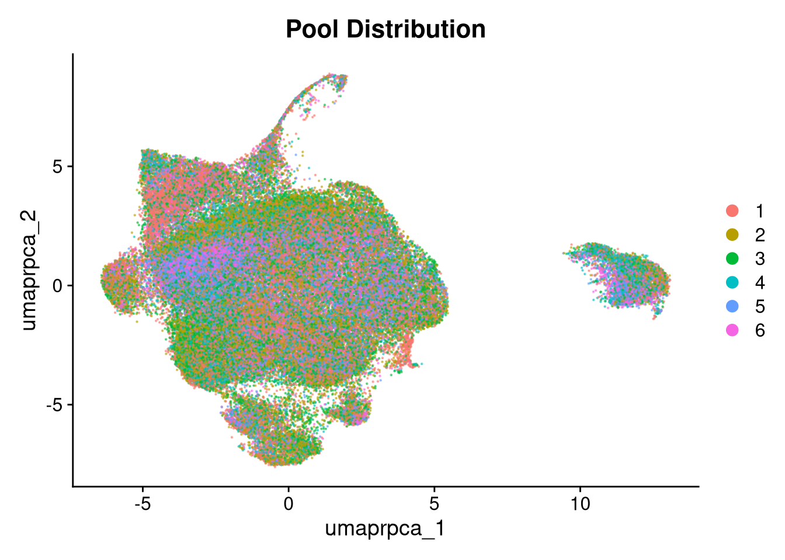
print(p4)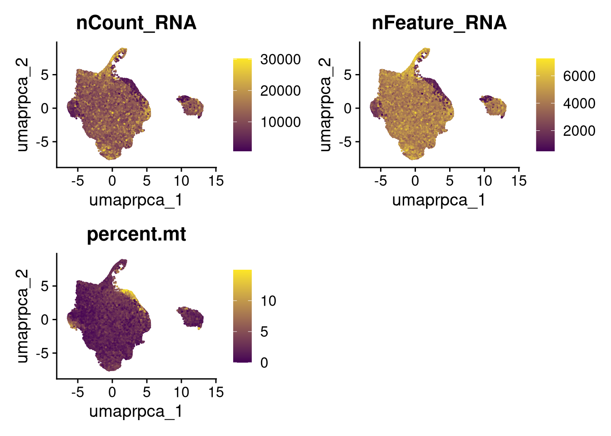
print(p5)
print(p5.5)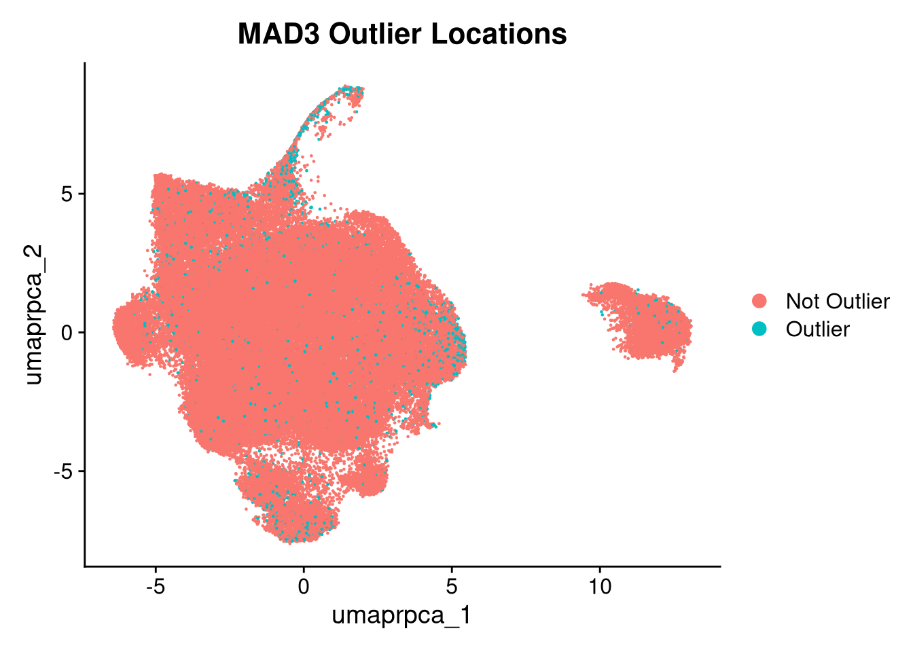
print(p6)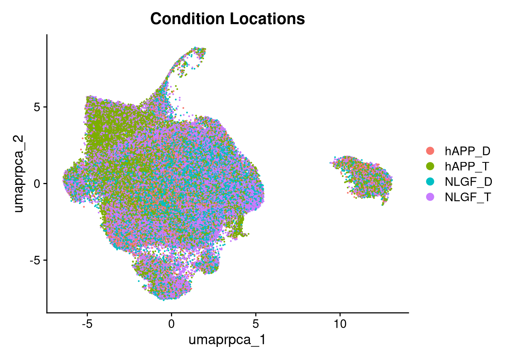
print(p6.5)
print(p3.5)
ggsave(
filename = file.path(graphs_dir, int_method, cluster_resolution, glue("integrated_{int_method}_clusters_{cluster_resolution}.pdf")),
plot = p1,
width = 7, height = 5, dpi = 300, units = "in")
ggsave(
filename = file.path(graphs_dir, int_method, cluster_resolution, glue("integrated_{int_method}_sample_dist_overlaid.pdf")),
plot = p2,
width = 7, height = 5, dpi = 300, units = "in")
ggsave(
filename = file.path(graphs_dir, int_method, cluster_resolution, glue("integrated_{int_method}_sample_dist_split.pdf")),
plot = p2.5,
width = 7, height = 5, dpi = 300, units = "in")
ggsave(
filename = file.path(graphs_dir, int_method, cluster_resolution, glue("integrated_{int_method}_batch_dist.pdf")),
plot = p3,
width = 7, height = 5, dpi = 300, units = "in")
ggsave(
filename = file.path(graphs_dir, int_method, cluster_resolution, glue("integrated_{int_method}_batch_dist_split.pdf")),
plot = p3.5,
width = 10, height = 5, dpi = 300, units = "in")
ggsave(
filename = file.path(graphs_dir,int_method, cluster_resolution, glue("integrated_{int_method}_qc.pdf")),
plot = p4,
width = 7, height = 5, dpi = 300, units = "in")
ggsave(
filename = file.path(graphs_dir,int_method, cluster_resolution, glue("integrated_{int_method}_doublet_dist.pdf")),
plot = p5,
width = 7, height = 5, dpi = 300, units = "in")
ggsave(
filename = file.path(graphs_dir,int_method, cluster_resolution, glue("integrated_{int_method}_outlier_dist.pdf")),
plot = p5.5,
width = 7, height = 5, dpi = 300, units = "in")
ggsave(
filename = file.path(graphs_dir, int_method, cluster_resolution, glue("integrated_{int_method}_condition_dist_overlaid.pdf")),
plot = p6,
width = 7, height = 5, dpi = 300, units = "in")
ggsave(
filename = file.path(graphs_dir, int_method, cluster_resolution, glue("integrated_{int_method}_condition_dist_split.pdf")),
plot = p6.5,
width = 7, height = 5, dpi = 300, units = "in")JoinLayers is needed to collapse separate batch raw counts into a single counts matrix, so can plot all of them together as one dataset.
For dotplots, standard log-normalisation is easier to interpret. Important as need to correct for sequencing depth.
Scale data is necessary for dotplots and heatmaps - z-scored.
DefaultAssay(merged_obj) <- "RNA"
merged_obj <- JoinLayers(merged_obj, assay= "RNA")
#SCTransform does this automatically.
#Corrects for some cells being sequenced deeper than others
merged_obj <- NormalizeData(merged_obj)Normalizing layer: counts#some genes are louder than others - drowns out signal of actual marker genes. Scales so mean expression across all cells is 0.
merged_obj <- ScaleData(merged_obj)Centering and scaling data matrixModule scores for Mancuso modules
mancuso <- "/nemo/lab/destrooperb/home/shared/zanettc/Mancuso2024_genesets"
gs_crm <- readLines(file.path(mancuso, "CRM_geneset.txt"))
gs_dam <- readLines(file.path(mancuso, "DAM_geneset.txt"))
gs_hla <- readLines(file.path(mancuso, "HLA_geneset.txt"))
gs_hm <- readLines(file.path(mancuso, "HM_geneset.txt"))
gs_irm <- readLines(file.path(mancuso, "IRM_geneset.txt"))
gs_rm <- readLines(file.path(mancuso, "RM_geneset.txt"))Warning in readLines(file.path(mancuso, "RM_geneset.txt")): incomplete final
line found on
'/nemo/lab/destrooperb/home/shared/zanettc/Mancuso2024_genesets/RM_geneset.txt'gs_tcrm <- readLines(file.path(mancuso, "transCRM_geneset.txt"))
#Load in non-microglia gene sets
sig_dir <- "signatures"
gs_myeloid <- readLines(file.path(base_dir, sig_dir, "myeloid.txt"))
myeloid_seu <- intersect(gs_myeloid, rownames(merged_obj))
myeloid_seu[1] "CCL2" "IL1B" "CCL3" "CD14" "LYZ" "MNDA" "ITGB2"
[8] "HLA-DRA" "FCGR1A" head(rownames(merged_obj))[1] "DDX11L2" "MIR1302-2HG" "ENSG00000238009" "ENSG00000239945"
[5] "ENSG00000241860" "ENSG00000241599"gs_proliferating <- readLines(file.path(base_dir,sig_dir, "proliferating.txt"))
prolif_seu <- intersect(gs_proliferating, rownames(merged_obj))
gs_proliferating [1] "CDC45" "CDCA7" "MCM10" "MCM2" "STMN1" "TUBB"
[7] "LGALS1" "H2AF2" "HIST1H4C" "ASPM" gs_macrophage <- readLines(file.path(base_dir,sig_dir, "macrophage.txt"))
macrophage_seu <- intersect(gs_macrophage, rownames(merged_obj))
macrophage_seu[1] "SIGLEC1" "LYVE1" "CD38" gs_dendritic <- readLines(file.path(base_dir,sig_dir, "dendritic.txt"))
dendritic_seu <- intersect(gs_dendritic, rownames(merged_obj))
dendritic_seu[1] "CLEC9A" "FCER1A" "CD44" "MYB" "PTPN12" "PTPN13" "AGR2" gene_sets <- list(
dendritic = dendritic_seu,
proliferating = prolif_seu,
macrophage = macrophage_seu,
myeloid = myeloid_seu,
CRM = gs_crm,
DAM = gs_dam,
HLA = gs_hla,
HM = gs_hm,
IRM = gs_irm,
RM = gs_rm,
tCRM = gs_tcrm
)
merged_obj <- AddModuleScore(merged_obj, features = gene_sets, name = names(gene_sets))Warning: The following features are not present in the object: CCL3L1, IL8,
MIR142, CCL4L1, LINC00936, H3F3B, RN7SL1, SNORD3B-2, AC006129.4, RP11-386I14.4,
MIR24-2, not searching for symbol synonymsWarning: The following features are not present in the object: MT-RNR2,
RP11-536O18.2, FAM129A, AC004086.1, MT-RNR1, C9orf16, TMEM251, ATP5E, PPAP2A,
not searching for symbol synonymsWarning: The following features are not present in the object: GNB2L1, GLTSCR2,
ATP5G2, not searching for symbol synonymsWarning: The following features are not present in the object: C1orf63,
FAM105A, GPR56, C10orf54, TMEM173, FYB, RP11-480C22.1, RP11-343N15.5, KIAA1551,
RP1-249H1.4, RP11-439A17.7, not searching for symbol synonymsWarning: The following features are not present in the object: DDX58, FAM26F,
C19orf66, WARS, not searching for symbol synonymsWarning: The following features are not present in the object: GNB2L1, not
searching for symbol synonymsWarning: The following features are not present in the object: LINC00936,
H3F3B, SNORD3B-1, CTA-29F11-1, SNORD3B-2, MT-RNR2, AC253572-2, AC103591-3,
AC020916-1, RP11-386I14-4, MT-RNR1, HIST2H2AA3, MTCO1P12, AP003481-1,
AC004687-1, SNORD3A, AC243960-1, HIST1H4E, RP1-18D14-7, AC245014-3, AL499604-1,
AL118516-1, AL021155-2, HIST1H4C, GGTA1P, RNU2-63P, not searching for symbol
synonymsmerged_obj$seurat_clusters <- factor(
merged_obj$rpca_clusters,
levels = sort(as.numeric(unique(as.character(merged_obj$rpca_clusters))))
)
merged_obj$seurat_clusters <- Idents(merged_obj)
p <- VlnPlot(
merged_obj,
features = c("dendritic1", "proliferating2", "macrophage3", "myeloid4"),
group.by = "seurat_clusters",
pt.size = 0,
ncol = 2
)
p
p2 <- VlnPlot(
merged_obj,
features = c("CRM5", "DAM6", "HLA7", "HM8", "IRM9","RM10", "tCRM11"),
group.by = "seurat_clusters",
pt.size = 0,
ncol = 4
)
p3 <- VlnPlot(
merged_obj,
features = c("nFeature_RNA"),
group.by = "seurat_clusters",
pt.size = 0,
ncol = 2
)
ggsave(
filename = file.path(graphs_dir,int_method, cluster_resolution, glue("integrated_{int_method}_clusters_vs_nonmicroglia_{cluster_resolution}.pdf")),
plot = p,
width = 7, height = 5, dpi = 300, units = "in"
)
ggsave(
filename = file.path(graphs_dir,int_method, cluster_resolution, glue("integrated_{int_method}_clusters_vs_mancuso_{cluster_resolution}.pdf")),
plot = p2,
width = 10, height = 5, dpi = 300, units = "in"
)
ggsave(
filename = file.path(graphs_dir,int_method, cluster_resolution, glue("integrated_{int_method}_clusters_vs_features_{cluster_resolution}.pdf")),
plot = p3,
width = 10, height = 5, dpi = 300, units = "in"
)
table(merged_obj$seurat_clusters)
0 1 2 3 4 5 6 7 8 9 10 11
23725 17263 10984 10686 6716 4772 4512 2402 2041 1508 1024 871 Uses Seurat function FindAllMarkers to find the key upregulated genes for each cluster.
DefaultAssay(merged_obj) <- "RNA"
library(presto)
Idents(merged_obj) <- glue("{int_method}_clusters")
markers <- FindAllMarkers(
merged_obj,
test.use = "wilcox",
only.pos = TRUE,
min.pct = 0.25,
logfc.threshold = 0.25
)Calculating cluster 0Calculating cluster 1Calculating cluster 2Calculating cluster 3Calculating cluster 4Calculating cluster 5Calculating cluster 6Calculating cluster 7Calculating cluster 8Calculating cluster 9Calculating cluster 10Calculating cluster 11head(markers)write.csv(markers, file.path(objects_dir, glue("wilcox_markers_{cluster_resolution}.csv")))
#check of top 10 cluster markers for each cluster
top10_markers <- markers %>%
group_by(cluster) %>%
slice_max(n = 10, order_by = avg_log2FC)
print(top10_markers)# A tibble: 120 × 7
# Groups: cluster [12]
p_val avg_log2FC pct.1 pct.2 p_val_adj cluster gene
<dbl> <dbl> <dbl> <dbl> <dbl> <fct> <chr>
1 0 0.807 0.655 0.475 0 0 HCG22
2 0 0.737 0.716 0.541 0 0 MIR503HG
3 0 0.662 0.422 0.288 0 0 IGSF21
4 4.63e-179 0.623 0.302 0.215 1.37e-174 0 WNT5A
5 3.15e-180 0.618 0.304 0.217 9.35e-176 0 DPP4
6 0 0.608 0.999 0.986 0 0 P2RY12
7 0 0.599 0.856 0.698 0 0 ENSG00000286403
8 5.40e-282 0.571 0.465 0.345 1.60e-277 0 PTPN14
9 0 0.571 0.683 0.527 0 0 PLXDC1
10 0 0.569 0.925 0.788 0 0 ENSG00000249738
# ℹ 110 more rowsp <- VlnPlot(merged_obj, features = "percent.mt", pt.size = 0) +
geom_hline(yintercept = 15, linetype = "dashed", color = "red")
ggsave(
filename = file.path(graphs_dir,int_method, cluster_resolution, glue("integrated_{int_method}_clusters_vs_mt_{cluster_resolution}.pdf")),
plot = p,
width = 10, height = 5, dpi = 300, units = "in"
)Warning: Removed 1 row containing missing values or values outside the scale range
(`geom_hline()`).unwanted_cells <- WhichCells(merged_obj, idents=c("9", "6"))
length(unwanted_cells)[1] 6020qs_save(unwanted_cells, file.path(objects_dir, "unwanted_cells_9_6.qs2"))